Meşrutiyet yıllarına kadar sosyoloji zaman zaman adı geçen, ancak içerikten yoksun bir bilim dalıydı. Fransız Devrimi’nin etkisiyle Aydınlanma’ya yönelik kimi yazında “ferd” ya da birey ön planda yer alıyordu. Osmanlı bilim dünyası, 1908 ertesi topluma, “cemiyet”e yönelecekti. Bu bir anlamda Herbert Spencer’dan Émile Durkheim’e geçişi ifade ediyordu. Durkheim ile birlikte Meşrutiyet sosyolojisi “cemiyet”i “ferd”ler topluluğu olmaktan çıkarıyor, ona kendine özgü kolektif bir kimlik kazandırıyordu. Bu bir anlamda psikoloji ötesinde bir sosyoloji arayışıydı. “Cemiyet” sosyolojinin bir gereği ise siyaset bilimi topluma tekabül eden başka bir sözcüğe gerek duyacaktı. O da “halk”tı. Böylece daha önceleri reaya, tebaa, ahali ve benzeri sözcüklerle ifade edilen ve yönetilen kesim anlamına gelen “halk” II. Meşrutiyet’le birlikte yaygın kullanılan bir sözcüğe dönüştü. “Halk” sözcüğü, “Halka doğru” gitmeyi gerektirecek, “Halkçılık” bu yıllarda giderek kristalleşen bir fikir hareketine dönüşecekti.
Cemiyet ve Halk
Böylece Türkiye’de sosyolojinin karşılığı olan “ilm-i ictimaî” ya da “ictimaiyyat”ın yanı sıra “halk” sözcüğü II. Meşrutiyet’in bilim jargonunun kazanımları arasında yer aldı. II. Meşrutiyet, Osmanlı düşünce tarihinde “cemiyet” ve “halk” sözcükleriyle yeni bir evreyi açıyordu. Batı bilim tasnifleri doğrultusunda soyut düşünce, kavramsallaştırma bu evrede güç kazandı. Beşeri bilimler tasnif görüyor, yeni bilim dalları ışığında türetilen sözcükler anlam kazanıyordu. Bu süreç dilde sadeleştirme girişimleriyle de uyum içindeydi. Eğitim sisteminde de bu yeni bilim dalları ışığında “uhrevi”den “dünyevi”ye hızlı bir gelişme izlenecekti.
Halk sözcüğü her ne kadar Osmanlı dilinde bilinegelen bir sözcükse de II. Meşrutiyet döneminde “halk”a farklı bir anlam yüklendi. Bundan böyle halk bireylerin toplamı olmanın ötesinde kendine özgü kolektif bir anlam kazandı. Toplumbilimsel derinlik elde etti. Halk sözcüğüne, 19. yüzyıl sözlüklerinde rastlanırsa136 da günlük konuşmalarda ya da yazında yeğlenen terim “ahali”ydi. Şemseddin Sami 1882 baskısı Kamus-ı Fransevî: Fransızcadan Türkçeye Lugat’ında137 “peuple” sözcüğünün karşılığı olarak Türkçede “ahali, kavim, ümmet; bir kasaba veya memleket ahalisinin aşağı sunufu [sınıfları], avam, nâs [insanlar]”ı veriyordu; henüz “halk” sözcüğü “peuple”ün karşılığı değildi. O dönemde Batı’da da “peuple” sözcüğü henüz sınıf atlamamıştı; alt sınıfları ifade ediyordu. Osmanlıcada halk sözcüğü vardı; ama farklı bir anlamda kullanılıyordu. Halk sözcüğü yaratılışla bağlantılıydı. Halk etmek, hilkat, mahlûk, mahlûkat, hâlik, hâlak, hâlikıyyet, hâlika, halâik vb. sözcükler hep yaratılışla ilintiliydi. Halk sözcüğü II. Meşrutiyet’le birlikte dünyevi bir anlam kazanacaktı ve bu sosyoloji sayesinde gerçekleşecekti.
II. Meşrutiyet yıllarında sosyolojinin ayrıcalıklı bir konumu vardı. Geri kalmışlığın, gelişememenin sorunsalları bir anlamda toplumsal düşünceyi tetikliyor ve Osmanlı birçok ülkeye oranla çok daha erken sosyolojiyi bağrına basıyordu. Kısa sürede sosyoloji ya da “ictimaiyyat” bilim tasnifinde odak oluşturdu. Sosyolojinin günlük pratiğe ya da politikalara yansıması ise “halkçılık” diye adlandırılan bir düşünce sistemiyle oldu. Zira, sosyolojinin ana konusu cemiyet, yani “halk”tı. Meşrutiyet’le birlikte Tanzimat’a özgü “ahali” bir kenara bırakılıyor, yerine “halk” kullanılmaya başlanıyordu. “Ahali” bireylerin kitleselliğiydi; sosyolojik içerikten yoksun topluluk anlamına geliyordu; kent yaşamıyla bireylerin ortak mekânda bir araya gelmeleri sonucu “ahali” oluşuyordu. Ama yine de “reaya”dan öte bir anlam taşıyordu. Reaya ya da tebaadan halka geçişin evresi ahaliydi. Diğer bir deyişle “kul”dan “vatandaş”a uzanan engebeli yolun bir ara aşamasıydı. II. Meşrutiyet yılları halk sözcüğünün giderek günlük dilde yer ettiği bir dönem oldu. Yeni anlamıyla halk “vatandaş”lardan oluşan toplumsal iradeyi simgeliyordu. Tekil vatandaşlar topluluğu olmanın ötesinde kolektif bir boyut taşıyordu. Tıpkı “millet” gibi bütüncü bir sözcüktü. Ulus-devletin inşası için gerekli yapıtaşlarının başında geliyordu.
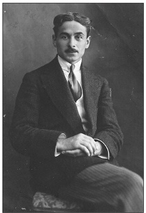
Türkçülerin yayımladıkları bir diğer dergi Halka Doğru adını taşıyordu.
Dergide yer alan birçok ünlü yazar arasında Hamdullah Suphi de vardı.
Türk Ocağı’na uzun yıllar başkanlık etmiş olan Hamdullah Suphi
“milli edebiyat” anlayışını benimseyen ilk yazarlardan biriydi.
Osmanlı’da “millet” sözcüğü de zaman içinde farklı anlamlar taşıdı. Milletin bugünkü Fransızca karşılığı olan “nation” Şemseddin Sami’nin sözlüğünde şöyle ifade ediliyordu: “Bir lisanla mütekellem ve bir nev’ ahlak ve adâtla mütehallik cemaat-ı kesire, ümmet, kavim, taife. [“millet” kelimesinin bu maksadla istimali galat-ı meşhurdur]; akvam-ı kâfire, ümem-i müşrike, müşerrekiyyet”. İlginç olan Şemseddin Sami’nin, “nation” sözcüğüne hiç de sempatiyle bakmamasıydı. Ona göre “nation” bir boyutuyla, kitapsızlık, tanrıtanımazlık ya da kâfirlik anlamına geliyordu. Millet sözcüğünü de “nation” karşılığı olarak görmek bir “galat-ı meşhur”du; yani yanlış olduğu halde herkes tarafından tutulan ve kullanılan bir sözcüktü. Şemseddin Sami’nin bu uyarılarına karşın “millet” ve çoğulu “milel” sözcükleri bir tür dini “cemaat” anlamında Osmanlı’da yaygın kullanım alanı bulmuştu. Çoğu kez gayrimüslim unsurlara yönelik olarak kullanıldı. Osmanlı topraklarında yaşayan Müslüman olmayan kesim “anasır-ı gayrimüslime” ya da “milel-i gayrimüslime” sözleriyle ifade ediliyordu.
Ancak II. Meşrutiyet yıllarıyla birlikte “millet” sözcüğü de giderek seküler bir anlam kazandı. Müslümanları da içeren biçimde Osmanlı Meşrutiyet hareketi içinde “Osmanlı milleti”nden söz edilmeye başlandı. “Türk milleti” ifadesi ise, türdeş Cumhuriyet Türkiyesi’ne kadar çok az kullanıldı. Böylece II. Meşrutiyet’te, “millet” dini cemaat kisvesinden çıkarak anayasal bir anlam kazandı. Bu, ulus-devlet için de gerekli bir unsurdu. Bireyle devlet arasında bir engebe olarak görülen “cemaat”i devre dışı bırakmak ve milleti devletin oluşumunda bütüncül bir unsur olarak görmek II. Meşrutiyet’in ana sorunu oldu. Ama yine de cemaati gündem dışına itmek II. Meşrutiyet’in harcı değildi. Cemaat, Cumhuriyet’le birlikte devre dışı kalacaktı.
Millet zamanla yazında yer etti. İlk evrede halk sözcüğü milletin yerine kullanıldı. Halk millete göre daha somuttu; toplumsal evrimin en son aşamasını simgeliyordu. Meşrutiyet aydını soyut düşünceyi algılamaya, tarihi kategoriler ışığında değerlendirmeye başlamıştı. Sosyoloji doğal olarak soyutlamadan yanaydı. Ulus-devleti anlamak için toplumların tarihsel evrimini gündeme getirmek gerekiyordu. Çağdaş tarih kıstaslarıyla geçmiş anlayışı Meşrutiyet yıllarında yeşerdi. Ulusal tarih Ali Reşad, Ahmed Refik, Fuat Köprülü gibi yazarlar sayesinde bu yıllarda yol kat etti. Bundan böyle tarihin toplumsal bir derinliği vardı. Ulusal tarih geçmişin somut olgularıyla uğraşırken sosyologlar soyut alana yöneldiler.
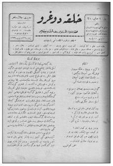
Rus Narodnik hareketinden ve Balkanlar’daki uzantısı
halkçılık [popülizm] ve köycülükten [peasantism]
esinlenen Osmanlı halkçıları, Türk Yurdu ve
Halka Doğru dergilerini çıkarmışlardı.
Bu tür soyut tarih anlayışının öncülerinden biri Ziya Gökalp’ti. Türkiye’de sosyoloji biliminin öncüsü sayılan Gökalp, tarihsel sosyolojinin ya da sosyolojik tarihin de temellerini atmıştı. Toplumlar, Gökalp’e göre altı aşamalı bir evrimden geçiyordu. Her aşamanın kendine özgü toplumsal katmanları [ictimaî tabaka] bulunuyordu. İlk aşama klan ya da semiyye devriydi. Onu kast devri izliyordu. Üçüncü aşama tarik devriydi. Derebeylik devri dördüncü aşamaydı. Buna Tanzimat öncesi Osmanlı toplumundaki ayanlar örnek olarak gösteriliyordu. Halkçılığın gündeme geldiği dönem, derebeyliği izleyen “sınıf devri”ydi. Osmanlı tarihinde Tanzimat bu aşamayı simgeliyordu. Tanzimat “raiyyeliği ve zımmiliği” kaldırmıştı. Ayanların “asalet” ve “hürriyet”ini, ülke yönetimine katılma hakkını “aşağıdaki diğer tabakalara” da tanımıştı. Diğer bir deyişle “siyasî” anlamda liberal hak ve özgürlükler Osmanlı reayasına “vatandaşlık” yolunu açıyordu. “Avam” adı verilen kitle “ayanlık”la eşit olunca “halk” adını alıyordu. Gökalp’e göre, Tanzimat ve Meşrutiyet siyasal hukuk açısından eşitliği amaçlayarak Türkiye’ye siyasi halkçılık ya da siyasi demokrasiyi getirmişti.
Cumhuriyet’in halkçılık anlayışı büyük ölçüde Gökalp’ten esinlenmişti. Aslında Gökalp’in muradı demokrasiydi. Batı’da demokrasi henüz karanlık çağa girmemişti. Uluslaşmanın bir parçasıydı. Gökalp, “Halkçılık” başlıklı yazısında siyasi halkçılık deyimi yanına parantez açmış ve Fransızca “démocratie politique” notu düşmüştü. Halkçılık, bir anlamda, Gökalp için Batı’daki demokrasi sözcüğünün Türkçesiydi. Nitekim yazıda birkaç satır aşağıda “ictimaî halkçılık” tanımının yanına “démocratie sociale” açıklaması konulmuştu.
Halk sözcüğünde olduğu gibi cemiyet sözcüğünün, daha önce kullanılmışsa da, sosyolojik bir içerik kazanması II. Meşrutiyet yıllarında oldu. “İctimaiyyat”, “cemiyet” ve “halk” II. Meşrutiyet sosyolojisinin üçlü sacayağıydı. Bugün sosyoloji ya da toplumbilim diye tanımlanan sözcük Osmanlı diline “hikmet-i ictimaiyye”, “ilm-i hikmet-i ictimaiyye”, “ilm-i ictimaî” ya da “ictimaiyyat” olarak girmişti. “10 Temmuz İnkılâbı”nın ilk günlerinden itibaren sosyoloji Osmanlı yazılı kültüründe yer etmeye başlamıştı. “Hikmet-i ictimaiyye” üzerine yazılanlar yeni bir toplumsal doku arayışını simgeliyordu: “Cemiyet-i beşeriye nasıl muhafaza-i hayat eder?”138Dönemin temel sorunu buydu. Ancak II. Meşrutiyet’in gündeme getirdiği “ictimaiyyat”ın boyutları bugünkü sosyolojinin alanını kat kat aşıyordu. “İctimaiyyat” her türlü güncel sorunu kuşatacak güçteydi. Eli kalem tutan herkes “ictimaiyyat”tan dem vuruyordu. İctimaiyyatın çözüm önermediği sorun hemen hemen yok gibiydi. Toplumla ilgilenmek, kişiyi “ictimaiyyatçı” yapıyordu. İctimaiyyat ortaöğretimde yer alıyordu. Darülfünun’da okutuluyordu. “Halk için ictimaiyyat” yazılıyordu. Dergilerde “ictimaiyyat” sütunları ayrılmıştı. Din, aile, çocuk, gençlik, vatan, millet, devlet, sanat vb. ictimaiyyatın günlük konularıydı. Bu bağlamda II. Meşrutiyet’in fikir dağarcığı “sosyolojist” bir anlayışın yörüngelediği bir olguydu.
Halkçılık ve Köycülük
II. Meşrutiyet’in Osmanlı düşün yaşamına getirdiği temel akımlardan biri kuşkusuz halkçılıktı. Rus Narodnik hareketinden ve Balkanlar’daki uzantısı halkçılık [popülizm] ve köycülükten [peasantism] esinlenen Osmanlı halkçıları Türk Ocağı ile Milli Talim ve Terbiye Cemiyeti çevresinde toplanmış, Türk Yurdu ve Halka Doğru dergilerini çıkarmışlardı. “Halka doğru” deyimi, bilindiği gibi Çarlık Rusyası’nda 19. yüzyılın ikinci yarısında gelişen “Narodnik” hareketinin temel şiarlarından biriydi.139Serfliğin kaldırılışı ertesi Rusya’da toprak temerküzü ya da toplulaşması giderek hızlanmış, tarımda küçük üreticilik gerilemişti. Aynı dönemde ülkedeki küçük burjuva aydın katmanları toplumda yoksullaşan kesimlerle bütünleşmeye yönelmişti.140Diğer bir deyişle köylülüğün alt gelir gruplarına seslenen Rus aydını, bozulan geleneksel yapıya “halka doğru” hareketiyle çözüm aramıştı. “Halka doğru gidenler” toprağını her geçen gün “kulaklar”a, zengin çiftçilere kaptıran ve giderek yoksullaşan küçük üretici köylülere sahip çıkıyor, geniş köylü kitlelerini Çarlığa karşı başkaldırıya çağırıyordu.
Devrim için köylülüğü kazanmak gerekirdi ve bu nedenle Rus aydınına önemli görevler düşüyordu. Aydın kesim halka gitmeli, halka inmeli; halkı uyarmalı, eğitmeli, aydınlatmalıydı. Rus “Halka doğru” hareketi Osmanlı aydınlarına Balkan aydınları ve Rusya’dan göçen Müslümanlar aracılığıyla ulaştı. Balkanlar’da yazar ve öğretmenler arasında Rus “Narodnik” hareketi 19. yüzyılın son çeyreğinden itibaren etkin olmaya başlamıştı. Yusuf Akçura, Ahmed Ağaoğlu, Hüseyinzade Ali vb. Türkçü göçmenler Panislavizm ve Rus popülizminden etkilenmiş, II. Meşrutiyet’le birlikte uluslaşma sürecinde gündeme gelen Türkçülük ve halkçılık akımlarında etkin rol oynamışlardı. Ve nihayet Ermeni aydınlarının ulusçu Taşnak akımına karşı geliştirdikleri sosyalist Hınçak akımı Narodnik fikirlerin etki alanındaydı. Türkçü aydınların bundan etkilenmeleri doğaldı.141
II. Meşrutiyet yayın organlarından Halka Doğru dergisi yazarlarından İttihat ve Terakki Merkez-i Umumi üyesi Hüseyinzade Ali [Turan], Türkçülükle halkçılığın “mürşidi” olarak görülüyor, Rusya’daki Panislavizm ve sosyalizmi Türkiye’ye uyarlayan kişi olarak gösteriliyordu. Ziya Gökalp, Yeni Mecmua’da yayımladığı “Türkçülük nasıl doğdu”142başlıklı yazısında şu satırlara yer veriyordu: “Ali Bey Petersburg Darülfünunu’nda iki tesir altında kalmıştı: Panislavizm, sosyalizm. Ali Bey Panislavizmden Pantürkizm mefkûresini çıkardığı gibi, sosyalizmden de halkçılık ahlakını aldı.” Nitekim Niyazi Berkes de bu esin kaynağını kaydediyor, Petersburg Üniversitesi’nde okuyan Hüseyinzade Ali’nin orada devrimci öğrenci komünlerini gördüğünü, hatta Namık Kemal’in adını bile ilk kez bunlardan duyduğunu, İstanbul’a gelip Tıp Fakültesi’ne girince, birkaç arkadaşıyla birlikte Narodnik modelinde ilk gizli öğrenci derneği olan İttihat ve Terakki Cemiyeti’ni kurduğunu yazıyordu.143Ancak, Niyazi Berkes, Meşrutiyet halkçılığının sosyalizmden kopup sosyolojizme yöneldiğine işaret etmekteydi. Ziya Gökalp halkçılığı Marksist sosyalizmden ayırarak Durkheim’in sosyolojizmine bulamış; onu Osmanlı Devleti’nin zorlu günlerinde “tesanütçülük” diye adlandırdığı solidarizm ve meslekî temsilcilik ideolojisine ulaştırmıştı.144
Ziya Gökalp hiçbir zaman sosyalizme sıcak bakmadı ama düşünce yapısını kendinden menkul bir “sosyalizm”e medyundu. Utangaç bir tavırla sosyalizan görüşlerini “tesanütçülük” ya da solidarizmin gerisine saklamıştı. Solidarist düşünce gerçekten tümüyle ithal bir düşünce biçimi miydi?! Bunun Osmanlı topraklarında yer etmiş kimi düşünme biçimleriyle bağlantısı yok muydu?! Bu konuda farklı görüşler gündemdeydi. Şerif Mardin halkçılık ilkesinin 20. yüzyılla birlikte Türkiye’de aydınlar arasında en çok tutulan akım oluşunu eski bir kültür kodunun yeni bir şekilde yansımasına bağlıyordu. Batı’ya giden Türk aydını sosyalizm-solidarizm ikileminde ikincisini seçmişti; solidarizm, bu kadroların kolayca kabul edebilecekleri, eskiden beri bildikleri, kendi toplumlarında hâkim olan değerlere benzeyen sosyal değerler getirmişti.145Tabii bu görüş sosyalizm ile solidarizmin farklı eksenlerde yürüdüğü varsayımına dayanıyordu. Şerif Mardin’in kastettiği Marksizan bir sosyalizmdi. Oysa Fransız sosyalizmi ile solidarizm zaman zaman örtüşmüştü. Fransız Radikal Partisi, Jaurès türü sosyalizm, solidarizmle ortak paydaları paylaşıyordu.
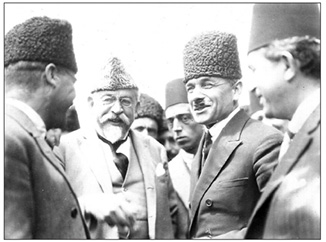
Yusuf Akçura, halk sözcüğünden “köylükte yaşayan az toprak sahibi, yahud büsbütün topraksız
rençperler” ve “şehirlerde geçinen ufak esnaf ve gündelikçi ameleler, ırgatlar”ın anlaşılması
gerektiğini savunuyordu.
Solidarizm, sınıf çatışmasını gündemine almayan, sosyal demokrasiyle dirsek teması olan bir düşünce akımıydı. Pierre Mendès France başta olmak üzere kimi sola yatkın Fransız Radikal Parti mensupları 1920’lerde “Jeune Turc” (Jön Türk) diye nitelendirilmişlerdi. Fransız Radikal Parti ile Jön Türkler’in solidarizme olan inançları sayesinde yakınlaşmaları kaçınılmazdı. Ama solidarist düşüncenin sosyalizm kadar sağ ideolojilere de zemin oluşturduğu görmezlikten gelinemezdi. Nitekim iki dünya savaşı arası dönemde, 1935 sonrası Cumhuriyet Halk Partisi’nin siyasal bağlamda sağ ideolojilere yakın bir çizgiye girmesi solidarizmin ne denli kaypak bir zeminde işlevselleştiğinin kanıtıydı.
Yusuf Akçura ve “Halka Doğru”
II. Meşrutiyet yıllarında millet ile halk sözcüklerinin anlamları yeterince kristalleşmemişti. Millet sözcüğüne “cemaat”le örtüşmesi nedeniyle ilk evrede mesafe kondu. İttihatçıların tercih ettikleri sözcük “millî” ve “halk” idi. Türkçülük akımının yayın organı Türk Yurdu’nda, “güzideler tarafından temsil olunan, halktan ayrı bir milletten söz edilemeyeceği” kaydediliyor, “milliyetin esaslarını yaratan halktır” deniyordu. Halkın zevki, ruhi duyguları, halkın akideleri, görüşleri milleti oluşturuyordu. Bu nedenle Türk Yurdu daima “halka doğru inmeyi”, halkı anlamayı, milleti yükseltmek için halkı yükseltmek gerektiğini vurgulamıştı.146
Türkçülerin yayımladıkları bir diğer dergi Halka Doğru adını taşıyordu. İlk sayısı 1913 Nisanı’nda çıkan dergide dönemin birçok ünlü yazarı yer almıştı. Halide Edib, Yusuf Akçura, Ahmed Ağaoğlu, Tevfik Nureddin, Celâl Sahir, Hüseyinzade Ali, Hamdullah Suphi, Akil Muhtar, Abdülfeyyaz Tevfik, Ali Canib, Ali Ulvi, Galip Bahtiyar, Kâzım Nami, Köprülüzade Mehmed Fuad, Ziya Gökalp, Mehmed Emin, Mehmed Ali Tevfik, Memduh Şevket dergide “sürekli yazıcılar” olarak tanıtılıyordu.147Ama dergiye damgasını vuracak olan Yusuf Akçura idi. “Halka” başlıklı yazı dizisinde148 “Biz Halka Doğru diye ad taktığımız bu cerideyi halk için, halka faydalı olmak için çıkarıyoruz” diyordu. Akçura’ya göre “Halkın, yani köylü ve esnafın, mektepler, cemiyetler yapabilmesi için önüne düşüp yol gösterecek okumuş adamlara ihtiyaç” vardı.
Akçura gizil sosyalizan görüşlere sahipti. Yazısında yoksul katmanların Osmanlı toplumunda karşılaştıkları güçlükleri dile getiriyor, köylünün toprağının yetersiz olduğunu, kaldırdığı ürünün geçimine yetmediğini, yüksek verim elde etse bile yol, demiryolu, araba vb. ulaşım olanaklarından yoksun oluşu nedeniyle pazarla bütünleşemediğini söylüyordu. Halk, ancak aydın kesimin önderliğinde bu sorunların üstesinden gelebilirdi. Bu nedenle Türk aydını halka yönelmeli, halkla bütünleşmeli, halkın seviyesine inerek onu eğitmeliydi.
“Halka doğru” gidenler giderek kendilerine alan açtılar. Türk Ocakları çevresi de bu alan içerisindeydi. Türk Yurdu Türk Ocağı’nın yayın organıydı. “Türklerin münevver gençleri”ni bir araya getiren Türk Ocağı, “halka doğru gitmeyi, halkı görmeyi, halkı öğrenmeyi” ilke edinmişti. Bu doğrultuda, Ocak’ta “Halk hayatının hangi cihetleri görülmek, öğrenilmek lazım geldiği” üzerine konferanslar, tartışma toplantıları düzenleniyordu. Ocak gençleri “halkın uğramakta olduğu hastalıklarla o hastalıkların sebepleri”ni araştırıyor, halkın yoksulluğunun, sefaletinin nedenlerine eğiliyorlardı. II. Meşrutiyet halkçılığı “halka doğru gidilmesini, halkın ahvalinin öğrenilmesini, öğrendikten sonra elden geldiği kadar halkın yaralarına merhem vurulmasını” benimsiyor, Osmanlı-Türk aydınlarını görev başına çağırıyordu.
Ocak gençlerinin önünde somut örnekler vardı. Birçok ülkede hoca, öğretmen, yüksekokul öğrencisi gibi okumuş insanlar halk arasına girerek bu vazifeyi görüyorlardı. Zengin, bilgili, uygar ve güçlü ülkelerin hemen hepsinde aydınlar “halka doğru” gitmiş, köye yönelmişlerdi. Almanya’da, Rusya’da aydınlar yalnız kentlerde çöreklenmemiş; kasabalara, köylere giderek oralardaki halkı eğiterek öğrenmeye, ilerlemeye, çalışmaya, zenginleşmeye özendirmiş, insani, milli, vatani duygularını yükseltmeye çabalamışlardı. Osmanlı-Türk aydınının başta Rus aydını olmak üzere halka gidilen ülkelerden öğreneceği çok şey vardı.
Akçura’ya göre Osmanlı ülkesinde de “halka doğru gidenler” vardı. Ancak, bunlar Türkler değildi. Osmanlı’nın gayrimüslimleri, Sırplar, Bulgarlar, Rumlardı. Akçura, “halka doğru giden” Sırplara Seniçe’de rastlamıştı. Karşılaştığı bir Sırp öğretmen Belgrad Öğretmen Okulu’nu bitirmiş, aynı okul mezunu eşiyle birlikte ücra bir köye giderek ilkokul öğretmenliğine başlamıştı. Aslında bu aydın Sırp, ilkokuldaki görevinin yanı sıra tüm köyün, belki bütün o yörenin hocalığını üstlenmişti. Yalnız yedi sekiz yaşındaki köylü çocuklarına alfabe öğretmekle kalmıyor, tüm köye, belki o yörenin tümüne “adam olmayı, usullü çalışmayı, servet kazanmayı ve... Sırplaşmayı” öğretiyordu. “İşte asıl halka doğru gitmek böyle olur”du. Akçura’ya göre, Senice ile Sırp hududu arasında küçük bir köyün öğretmeni olan bu Sırp genci, İstanbul’un yüksekokullarında öğretim üyesi ya da yönetici olan kişilerin birçoğundan bilgi, beceri hatta zekâca üstündü. Bu ülkücü köy öğretmeni Sırbistan’ın büyük kentlerinden birinde kolaylıkla iş bulabilirdi. Fakat o köy öğretmenliğini yeğlemiş, “karanlıklara girip ışık dağıtmayı, zaten hayli aydın yerlerde parlayıp göze çarpmaya” üstün görmüştü. Akçura, “halka doğru giden” Sırp gençlerinin çabalarının boşa gitmediğini son siyasal gelişmelerin kanıtladığına dikkati çekiyordu. Osmanlı’nın Balkan Harbi’nde Sırplara yenik düşmesinin temel nedenlerinden biri “böyle halka doğru giden, köy hocalığı eden Darülfünun mezunları”ndan yoksun oluşuydu.
Akçura, Sırp örneğiyle yetinmiyordu. Anadolu Ortodoks Rumlarının da Sırplara benzer bir çaba içinde olduğunu kaydediyordu. Osmanlı Rum gençleri de “halka doğru gitmeye” başlamışlardı. Anadolu’nun değişik yörelerinden, Trabzon’dan, Samsun’dan, Kayseri’den, Ankara’dan birçok Rum genci Yunanistan’a, Atina Üniversitesi’ne okumaya gidiyor, eğitimleri sonrası Anadolu’nun dört bir köşesine dağılarak, kasabalarda, köylerde okullar açıyor, öğretmenlik, hekimlik yapıyorlardı. Diğer bir deyişle Osmanlı Ortodoks Rum gençleri artık “halka gidiyorlar, kendi halklarının, Rumların maddi hastalıklarına ilaç veriyorlar, manevi hastalık olan cehaletlerini gidermeye çalışıyorlar” ve aynı zamanda kendi ulusal duygularını, “Yunanlılık fikrini” aşılıyorlardı. Akçura, Osmanlı-Türk aydınının bu tür gelişmelere duyarsız kalamayacağını, Türklerin de er geç “halka doğru” gideceğini söylüyordu. Nitekim Halka Doğru dergisi bu amaçla çıkarılıyordu.
“Halka doğru” anlayışı kısa sürede Müslüman Türkler arasında sonuç vermişti. Bununla ilgili bilgiler yine Halka Doğru dergisinde yer alıyordu. Dergiye göre, artık Türk gençliği de “halka doğru” gitmeye başlamıştı. Harekete Tıbbiyeli aydın gençlik öncülük ediyordu. 1913 yazında Tıbbiyeli gençler “Anadolu’da halk arasında yayan seyahat etmişler, yani halka doğru gitmişler”di. Bu yolda diğer gençlerin Tıbbiyelileri örnek almalarını öneren Halka Doğru dergisi, ilk “halka doğru” eylemini gerçekleştirenlerden Tıbbiyeli Kıbrıslı İrfan’ın anılarına yer veriyordu. “Halka doğru giden” ilk Türk popülistleri Tıbbiyeliler, ülkede yaşam hakkının Türk köylülerini yükselterek kazanılacağına derin ve sarsılmaz bir iman ve itikatla kani idiler. Bu bağlamda Türk gençlerinin bu kesimlerine karşı kayıtsız kalmalarını eleştiriyorlardı. “Asker” kardeşlerinin yaşadığı muhiti görmek, yaşam tarzlarını incelemek Türk gençlerine düşen bir görevdi. Toplumsal yaşamda gençlerin başı çekmesi kaçınılmazdı. Ülke genci “ulusal hayat”ta tüm engebeleri aşmalı, “milliyet”ine ait sorunlarda her tehlikenin üstesinden gelmeli, cesur, güçlü ve girişimci olmalıydı.
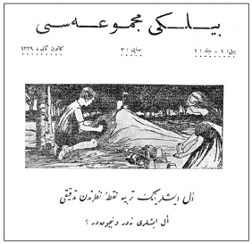
Türk Bilgi Derneği ilk aşamada ülkede “usul ve ihtisas”a, diğer bir deyişle bilimsel yöntem ve
uzmanlığa yönelecek bir çevre oluşturmak amacıyla Bilgi Mecmuası’nı yayımladı. İlk sayısı
Kasım 1913’te çıkan dergi Haziran 1914’e kadar yedi sayı yayımlandı.
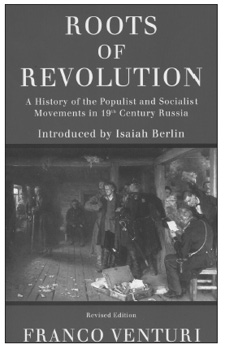
Rus popülizmi üzerine en kapsamlı çalışmayı 1952 yılında Il Populismo Russo
başlığıyla Franco Venturi ortaya koydu. Rusya’da nihilistlerden, Lenin ile
Bakunin’in erken dönemlerine popülizminin doğuş öyküsünü içeriyordu.
Tertemiz havasıyla ormanları, bayırları, yüksek yaylalarına, sağlıklı besin maddelerine karşın Anadolu insanı bir deri bir kemikti. Bu sefaleti, bu felaketi, bu musibeti meslek açısından da inceleme arzusunda olan Tıbbiyeliler bir an önce “Anadolu’nun köy hayatı”na koşmak istiyorlardı. Bu amaçla İzmir’e kadar yürüyerek gitmeyi planlayan Tıbbiyeli gençler yol bulabilmek için ordudan erkân-ı harbiyye haritaları temin etmişler, pusulalarıyla ve köylüye dağıtılacak “sulfato” şişeleri ve çiçek aşısı tüplerinden oluşan 25-30 kiloluk yükleriyle 5 Temmuz Cuma günü İstanbul’dan yola çıkmışlardı. Bu yaya yolculuğun kendileri için ne büyük bir zevk olduğunu vurgulayan Tıbbiyeli İrfan, yol boyunca Mehmed Emin Bey’in “Ben bir Türk’üm, dinim cinsim uludur. Ateş ile özüm sinem doludur” teranesini hep bir ağızdan tekrarladıklarını kaydediyordu. Tıbbiyeliler köylüye sağlayacakları maddi ve manevi yararlardan başka, Türk gençlerinin artık kasvetli odalarda, salon köşelerinde miskin miskin oturmadıklarını, Türk gücünün her şeye kadir olduğunu dünyaya kanıtlayacaklardı. Bundan böyle tüm Türk gençliğinin izlemesi gerektiği yolun ilk adımını attıkları için yürekleri “lekesiz ve samimi bir duygu” ile çarpıyordu.149
Ziya Gökalp ve Halkiyyat
Halka Doğru dergisinde geliştirilen ikinci önemli boyut “halk medeniyeti” kavramıydı. Bu anlayış folklora yönelişi simgeliyordu. Dergide Ziya Gökalp’in “halk medeniyeti” üzerine iki makalesi yayımlandı. Bu makaleler tıpkı “havas” ve “avam” ayrımına benzer bir ikilemi gündeme getiriyordu. Bir yanda “resmi medeniyet” öte yanda “halk medeniyeti” yer alıyordu. Sosyolojinin “halk medeniyeti”ni inceleyen bir şubesi olması gerekiyordu. Yazılı olmayan, ağızdan ağza geçmek suretiyle bir soydan öbürüne uzayıp giden bu “ananevi medeniyeti” inceleyen “halkiyyat” adlı bir ilim vardı. Gökalp, halkiyyatı folklor anlamına kullanıyordu. Diğer milletlerde resmi medeniyetle halk medeniyeti o denli farklı alanları oluşturmuyordu. Türklerde ise bu ayrılık ilk bakışta göze çarpıyordu. Türklerde resmi dilden, resmi edebiyattan, resmi ahlaktan, resmi hukuktan, resmi iktisattan, resmi teşkilattan büsbütün başka bir halk dili, halk edebiyatı, halk ahlakı, halk hukuku, halk iktisadı, halk teşkilatı vardı. Türkler kendi kurumlarını yükselterek bir medeniyet inşa edeceklerine yabancı milletlerin kurumlarını devralıyor ve onlardan yapay bir medeniyet oluşturuyorlardı. Aslında Türklerin kendine özgü bir medeniyeti vardı. Ancak zamanla Türk kavminin üst yöneticileri “divan” oluşturarak milli ananelerini unutmuş, yabancı medeniyetleri kendinden daha üstün görerek taklit etmiş ve Türklükten uzaklaşmıştı. Bereket versin ki halkın içinden seçkin kişiler, şifahi ananeleri koruyarak Türklüğü büsbütün çöküntüden kurtarmışlardı.
Gökalp’e göre, millet olarak Türkleri yükselten unsurların halk medeniyetinde, gerilemesine neden olanların ise resmi müesseselerde aranması gerekiyordu. Ancak, unutulmaması gereken bir husus vardı: Bir milletin sözlü ananesiyle yazılı kültürü arasında bu denli derin bir uçurum olursa resmi medeniyet halkın zekâsını emerek halk medeniyetini büyük bir kansızlığa düşürüyordu. Başka milletlerde halk ile resmi seçkinler arasında daimi bir fikir ve duygu alışverişi vardı. Türklerde bu iki sınıf arasındaki ilişkiler kesintiye uğramış olduğu için, ne resmi “ârif”lerde milli bir hassasiyet, ne de halk irfanında bir düzen, bir yükseliş görülüyordu. Bu nedenle Türk halkı da yavaş yavaş geriliyordu. O nedenle “Türk halkiyyatı”nı, Türk folklorunu incelerken bu çöküş olayını da ele almak gerekiyordu. Halka Doğru gidilirken ele alınması gereken belli başlı sekiz alan vardı. Bunlar halk teşkilatı, halk felsefesi, halk ahlakiyyatı, halk hukukiyyatı, halk bediiyyatı, halk lisaniyyatı, halk iktisadiyyatı ve halk kıyemmiyyatı [değerli nesneler] idi.150
Topluma bakarken Gökalp’in zaman zaman uzviyetçi yönü depreşiyordu. Halkiyyat alanında da bu böyleydi. Gökalp’e göre, her girişimi devletten, yani resmi teşkilattan bekleyenler için devlet “ruh”, halk ise “beden”i oluşturuyordu. Oysa gerçek bu telakkinin tam zıddı olmalıydı; yani milletin ruhunu “halk”, bedenini ise “devlet” oluşturmalıydı. Devlet “divan”lardan oluşuyordu. Hükümet, millet meclisi, ordu, yönetim, vilayet meclisleri, resmi okullar, resmi kurumlar birer “divan”dan ibaretti. Divanların bütün işleri katı yasalara, nizamlara bağlıydı. Divanı oluşturan memurların terfi ve tenzilleri sabit usullere tabiydi. Bu usullere göre ehliyetten önce “kıdem”, zekâdan öne “mansıp” göz önünde bulundurulurdu. Divanlar değişmez kaidelere tabi olduğu için toplumsal ve siyasal hayatın her gün dönüşen ihtiyaçlarına hiçbir zaman tam anlamıyla intibak edemezdi. Binaenaleyh devlet örgütü bedenimizi oluşturan uzvî mekanizmalar gibi, birtakım birbirine bağımlı ve birbiri peşi sıra işlev gören makinelerdi. Halk denilen heyet ise aile, boy, aşiret, hirfet, sanat şirketleri, dernekler, siyasal partiler dini ve lisani cemaatler gibi birtakım “ocak”lardan oluşuyordu. Ocak hiçbir yasayla, hiçbir değişmez kaideyle bağlı değildi. Ocaklar kökleri geçmişte ve dalları gelecekte olan canlı ve evrilen ananelere sahipti. Ocakta zekâ ve kudretin faaliyetine set çekecek önlemler yoktu. Halk teşkilatı milletin ruhu olmalıydı. Bunun gerçekleşmesi için divan makinelerini tahrik eden unsurlar ocaklar olmalıydı. Devlet aygıtının en önemli çarkları, millet meclisi ile hükümetti. Bu çarkları harekete geçiren güçlerin siyasal partiler olduğunu bilmeyen yoktu. Siyasal partiler ise birer ocaktan yani halk temsillerinden başka bir şey değildi. Vilayet meclislerini yöneten eller de, mahalli örgütler yani eşraf heyetleri, iktisadi şirketler, ruhani meclislerdi. Donanma Cemiyeti’nin Bahriyye’ye, Müdafaa-i Milliyye örgütünün orduya ne denli güç kattığı tecrübeyle sabitti. Türk Gücü kabilinden “boy-scouts”, ya da izci kurumlarının milli satvete ifa edeceği hizmetleri başka milletlerin örneklerinden izlemek mümkündü. Kısaca, devlete güvenerek halkı ihmal etmenin ne denli çıkmaz yol olduğunu anlamak gerekiyordu. Ziya Gökalp, bu satırlarla bir anlamda sivil toplumu hedefliyordu. Halkçılık sivil toplumun oluşumuyla yakından bağlantılıydı. Halka doğru gitmek sivil toplum örgütleri kurmak anlamına geliyordu.
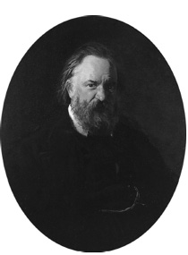
Narodnik hareketinin öncülerinden sayılan Alexander
Ivanovich Herzen Rus sosyalizminin babası diye bilinegeldi.
1861’de Rusya’da serflerin özgürlüklerine kavuşması için
politik ortamı hazırladı.
Gökalp tarihsel döngülere inanan bir düşünce adamıydı. Bu nedenle de geçmişte “altın çağ” arayışı içerisindeydi. Ona göre, Osmanlı Devleti kurulurken, bütün kurumlar ocak halindeydi. Yani “halk”ın elindeydi. Enderun-ı Hümayun, Acemi Oğlanlar Kışlası, Paşa Daireleri birer ameli mektep halindeydi. Genç zekâlar bu ocaklara katılarak ehemmiyetlerine göre kılıç-tımardan veziriazamlık rütbesine kadar yükselirlerdi. Levent Ocakları, birkaç korsan gemisiyle ülkeler fetheden Barbaros Hayrettinler, Turgut Reisler yetiştirirdi. Yeniçerilik, Sipahilik, Garp Ocakları, Mısır ve Bağdat Kölemenleri birer aile ocağı halinde idi. Bu ocakların ananaleri, pirleri, kendilerine özgü “asabiyet”leri vardı. Bir milletin “ihtiyarlama”sı, güç yitirmesi, ocakların divan haline geçmesi demekti. Osmanlı topraklarında halk örgütünün resmi müesseseler haline girmeye başladığı gün Osmanlılık çökmeye başlamıştı.
Müslüman unsur bu tür bir çözümsüzlüğe yönelirken Osmanlı topraklarında yaşayan gayrimüslim unsurlar ise kendi halk örgütlerini kuruyorlardı. Bir diğer deyişle gençleşiyorlardı. Patrikhaneler, metropolithaneler, cemaat mektepleri, şirketler, ticarethaneler, komiteler, çeteler birer mücahit ocağı halinde çalışıyordu. Ve nihayet bu “kavmî ocaklar”dan birer devlet peyda ederek Osmanlı’dan ayrılmışlardı. Bu küçük devletler bağımsız olduktan sonra resmi kurumlar oluşturmuşlarsa da bu resmi teşkilatın ruhları yine ocak halindeydi. Bizde olduğu gibi divan mahiyetine geçmemişti. Bundan dolayıdır ki küçük Balkan devletleri ruhî milletler halinde çalışmış, yükselmişti. Türkler ise gittikçe gerilemiş, çöküntüye uğramıştı. Çünkü “bizim ruhumuz uyuşmuştu.”151
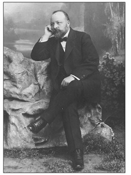
Mehmed Emin [Yurdakul] Meşrutiyet yıllarında milli edebiyat akımının
öncü şairleri arasında yer aldı. İlk şiirini 1897’de Yunan Harbi sırasında Asır
gazetesinde yayımladı. “Cenge Giderken” adlı bu şiirle ünlendi.
“Halk Medeniyeti” başlıklı makaleler genelinde “halkiyyat”ın ilk adımları olarak literatüre geçti. Bu bir anlamda Türkiye’de folklorun başlangıcıydı. Kısa bir süre sonra, 1914’te Rıza Tevfik, Peyam gazetesinin ekinde “Folklor-Folklore” adlı yazısını yayımladı. Onu aynı yıl, Köprülüzade Mehmet Fuad’ın İkdam’da çıkan “Yeni Bir İlim: Halkiyyat: Folklore” başlıklı makalesi izledi. Halk arasında folklor derlemelerinin yapılmasını savunan Köprülü için “milliyet asrı”nın temel referans noktası folklordu. Balkan milletleri silahın yanı sıra tarihle, dille, folklorla kimlik bulmuşlardı. Halk edebiyatı alanında özgün çalışmalarla folklor araştırmalarına ortam sağlanmıştı. Köprülü’ye göre çağdaş edebiyat halk edebiyatına yaslanmalıydı. Türklerin önünde örnek alınacak bir Alman milleti vardı. Alman romantikleri “halka giderek”, dilde, edebiyatta, estetikte halka başvurarak bir ulus inşa etmişlerdi. Bütün milletçiler folklora önem vermeliydi; milli kültürün saf haline ancak “halka gitmek”le ulaşılabilirdi.152
Halka Doğru hareketi kısa sürede halkalar halinde Anadolu’ya yayıldı. Türk Ocağı ilk açıldığı günden beri gençleri Anadolu’ya yöneltmiş, Ocak müdürü “Anadolu’ya gitmeyi, Anadolu’da gezmeyi, Anadolu’yu öğrenmeyi, Anadolu’yu sevmeyi” özendirmişti. “Milli şair” Mehmed Emin [Yurdakul] Anadolu’daki Türk köylüsünün durumuna dikkati çeken, “şefkatli ve halka muhabbetle dolu” şiirler yazmıştı. İsmail Hakkı Türk Yurdu’nda 1916 yılında çıkan bir yazı dizisinde uzun yıllar İstanbul’un Anadolu’yu ihmal ettiğini kaydediyordu. İstanbullu beyleri, efendileri “halk” ile “Anadolu” ile, başka bir deyişle “İstanbul’u yani memleketin başını, gövdesiyle meşgul etmek” gerekiyordu. Bu amaçla Türk Ocakları’nın yanı sıra, Türk Yurdu ve Halka Doğru dergileri çok uğraş vermişti.153
Aynı tarihlerde Mehmed Şemseddin [Günaltay] Anadolu halkının cehaletini, batıl itikatlarını gidermek amacıyla Zulmetten Nura adlı bir eser ortaya koymuştu.154Kitapta yer alan makalelerin bazıları şu başlıkları taşıyordu: “Anadolu’nun yaralarını saracak heyetler ister”, “Anadolu’da inhizal-i ırkî [ırk gerilemesi] ve çare-i izalesi”, “Anadolu’da sefalet-i hazıraya karşı yapılacak tedâbir-i müstacele”, “Anadolu, muhtekirlerin insafsız pençeleri altında kıvranıyor”, “Anadolu’ya fenni heyetler ve bilhassa ziraat heyetleri göndermelidir.” Anadolu, artık İstanbul aydınlarının umut kapısı olmuştu. Özellikle Cihan Harbi’yle birlikte Anadolu birçok açıdan önem kazanmıştı.
Türk milliyetçiliği Anadolu’ya yönelmeyi gerektirmiş, Trablusgarp ve Balkan Savaşları ardından Arapların da bağımsızlık sürecine girmeleri İttihatçıları Müslüman-Türk unsurla meskûn Anadolu’ya bağlamıştı. Öte yandan ülke ekonomisinin savaşla birlikte dışa kapanışı Osmanlı’yı kendi yağıyla kavrulmaya zorlamış, temel besin maddeleri Anadolu’dan sağlanır olmuştu.
Türk Yurdu “Dün payitahtı en ziyade Anadolu’nun evladı korudu, bugün payitahtı yine Anadolu’nun kadın erkek rençperleri doyuruyor” diyordu. Diğer bir deyişle Anadolu “velinimetimiz”di. Türk Yurdu Derneği’nin yayımladığı ve yine Celâl Sahir’in yönettiği bir diğer dergi Türk Sözü’ydü. “Halka doğru gitmek, halk için çalışmak” şiarı ile yayın hayatına giren haftalık Türk Sözü dergisi 16 sayı yayımlandı. Derginin başyazarı Ömer Seyfeddin ilk sayıda derginin amacını belirtirken Türk Sözü’nün “uyanan, âlim ve milliyetine âşık, yüksek Türk gençliği ile hâlâ uyuyan ve bir ışık bekleyen Türk halkı arasında bir kapı” olduğunu vurguluyordu. Gençlik o kapıdan girmekle alçalmayacak, bilakis halkı, yani kendi varlığını, kendi milletini yükseltecek, kendine benzetecekti.”155
“Halka doğru” hareketi Batı Anadolu’da da, özellikle “ictimaî” çabaların yoğunlaştığı Konya ve Eskişehir’de yankılandı. Nitekim bu kentlerdeki yayın organları halkçılığın somut örnekleriydi. Türkçülerin etkin oldukları diğer bir dernek, Milli Talim ve Terbiye Cemiyeti’nin de faaliyetleri bu doğrultudaydı.156Cemiyet Anadolu’da araştırmalara girişmiş, kendi deyişiyle, inceleme seyahati yaptırmış, yarışmalar tertiplemiş, Köylü Kütüphanesi ve Köy Hocası Kütüphanesi kitap dizilerini oluşturmuştu.157Milli Talim ve Terbiye Cemiyeti, düzenlediği açık oturumlarda “halka doğru inmenin ve halkı yükseltmenin yolları”nı tartışıyordu. 22 Mart 1918 tarihli kadınların da katıldıkları toplantıda Binbaşı Rıza Bey “Halka yaklaşmak için lisan cihetindeki açıklığın, yaşayış itibariyle hasıl olan farkın kaldırılması” gerektiğini ifade ediyordu. Ahmed Hamdi Bey ise “Halkı sevmek için bilmek lazımdır” diyor, halka ulaşabilmek için uygarlık gereçlerinden, dergi, telefon, yol gibi iletişim ve ulaşım araçlarından yararlanılmasını öneriyordu.158Aynı oturumda Milaslı İsmail Hakkı, köylünün “his adamı” olmaktan çok “menfaat adamı” olduğunu söylüyordu. Köylü maneviyatla yetinmiyordu. Hoca takımını önce pek müşfik bir şekilde karşılarsa da yıllar geçtikçe bir çıkar hasıl olmadığını görerek ondan el çekiyordu. Bu nedenle hocalar, din adamları yerine, muallim, tabip, tahsildar gibi doğrudan köylüyle temas kuracak kişilere başvurulmalıydı. Köylünün yaşam düzeyini yükseltecek aydınları göreve çağırmak gerekiyordu. Ardından söz alan İbrahim Memduh Bey, aydın seferberliğini bir kez daha vurgulayarak, örnek olarak Bulgaristan köylerinde Sorbonne mezunlarının öğretmenlik ettiklerini söylüyordu. Hüsameddin Bey ise, Bulgaristan ile Türkiye’yi karşılaştırarak, ilköğretimin Bulgaristan’da olduğu gibi zorunlu kılınmasını öneriyordu. Günün son konuşmacılarından Bohor İsmail Efendi, münevverleri açılmış, halkı açılmamış bir goncaya benzetiyor, halkın eğitilmesi gerektiğini söylüyordu. Ve nihayet, Kâzım Nami Bey “halkı yükseltmek” için önce “hissen halka yükselmek” gereğini ileri sürüyordu.
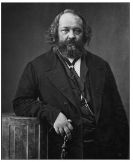
Mihail Aleksandroviç Bakunin tanınmış bir Rus devrimci
ve kolektivist anarşistti. Rusya’da Narodnik hareketinin de
öncülerinden sayılıyordu.
Falih Rıfkı ve Halkçılık
Böylece Selanik’teki dil hareketi ardından “halka doğru” gidilerek Meşrutiyet yıllarında Türkiye’de popülizmin temelleri atılmış oluyordu. Ancak, halkçılık tek başına ulus-devleti inşa etmeye yetmeyecekti. Bir diğer fikir hareketini, zamanla milliyetçiliğe dönüşecek olan “milletçilik”i gerekli kılıyordu. Milliyetçilik ve halkçılık İttihatçıların “ictimaî inkılâb” dedikleri “yeni hayat”ın temel dayanaklarıydı. “Halkçılık” sözcüğü bir fikir hareketi olarak ilk kez Balkan Harbi ertesi Baha Tevfik’in yayımladığı Zekâ dergisinde kullanıldı. Falih Rıfkı, derginin 7 Mayıs 1914 tarihli 30. sayısında “Halk için çalışmak” başlıklı başmakalesinde Selanik’te Genç Kalemler çevresinde başlayan “yeni lisan” hareketini “halkçılık” olarak niteliyordu.159Yazıda Türkçülükle, dilin sadeleştirilmesi arasında bağ kuruluyor, Balkan Harbi’nin bu süreci pekiştirdiği vurgulanıyordu. Falih Rıfkı’ya göre, Türk gençliği Balkan Harbi ertesi artık gerçeği bütün çıplaklığıyla görmeye başlamıştı: Halkla temas bundan böyle kesinkes zorunluluk, “kati bir mecburiyet” arz ediyordu. Halksız hiçbir şey olamazdı. Bir devletin gücünün, kudretinin kaynağı halkın ta kendisiydi. Eğer bu halkla güç birliğine gidilmezse ülke felakete sürüklenirdi. Bu gerçeği nihayet “Türk gençliği” görmüştü: “İlahi bir azim, yılmaz bir sebat ile” bu ideale, bu mefkûreye, bu fikre sarılan gençlik dönüşü olmayan bir mecraya girmişti. Bu yolda birçok engelle karşılaşması doğaldı. Nitekim de öyle oldu. Arapça ve Farsa kelimelerden oluşan, karmakarışık, garip bir lisan olan Osmanlıca bu tür sorunların ilkiydi; büyük bir engeldi.
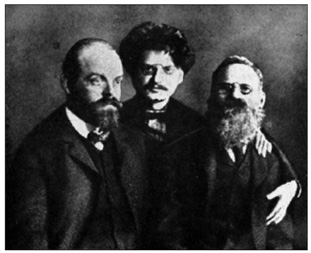
Rus asıllı devrimci Alexander Lvovich Parvus, Leon Troçki ve Leo Deutsch ile birlikte Rusya’da hapis
yatmıştı. Türk Bilgi Derneği’nin “fahri” üyesiydi ve Türk Yurdu ve Bilgi mecmualarındaki yazılarıyla
İttihatçılar üzerinde büyük etkisi oldu.
Oysa İttihat ve Terakki Osmanlıcayı değişik “unsur”lardan oluşan Osmanlı toplumunu bir arada tutmak için icat etmişti. Kanun-ı Esasi’nin “lisan-ı Türkî”si II. Meşrutiyet’le birlikte Osmanlıca olarak nitelenir olmuştu. Hayyeale’l-Felâh – Osmanlı İttihad ve Terakki Cemiyetinin Kardaşlarına Hediyesi başlıklı risalede “Millet-i Osmaniyye ne demektir?” sorusuna verilen yanıtta “Millet-i Osmaniyye muhtelif din ve milletlere malik Türk, Arap, Arnavud, Kürt, Ermeni, Rum, Bulgar, Yahudi... gibi kavimlerin bir araya gelmesinden hasıl olan heyettir” deniyor ve Osmanlıcanın işlevi şu satırlarla vurgulanıyordu: “Osmanlı memleketinde bulunan bir unsur diğer unsurlara fikrini bildirmek için ayrı ayrı her birinin lisanını öğrenmeğe muhtaç kalır. Buna da imkân yoktur. Bu imkânsızlığın önünü almak için Osmanlıca lisanı vücuda gelmiştir.”160
Falih Rıfkı’ya göre Osmanlıca, halkla Osmanlı aydını ve entelektüel gençlik arasına sokulmuş esrarlı bir perdeydi. Bu perde halkla bağlantıyı ya da iletişim kurmayı olanaksız hale getiriyordu. Birçok Osmanlı münevveri tantanasına ve ahengine kanarak Osmanlıca dilini konuşur olmuştu. Osmanlıcayı birdenbire terk ederek sade Türkçe yazmak olanaksızdı. Ama yine de bir yerden başlamak gerekiyordu. Falih Rıfkı’ya göre bu perde yırtılmalıydı. İşte Selanik’te başlatılan “yeni lisan” hareketi bu çabanın başını çekmişti. Dergiler yayımlanmaya başlanmış, Arapça ve Farsça kaidelerle yapılan terkiplerin yerine Türkçeleri bulunmaya çalışılmıştı. Halkla temas için atılan bu ilk adım, Türkçülük diye bilinen hareketi tetiklemiş ve Falih Rıfkı’ya göre, başarıyla sonuçlanmıştı. Türk gençliği bunu benimsiyor, sade Türkçe aralarında hızla yayılıyordu. “Türklük mefkûresi” ya da fikrî hareketi de doğal olarak bu yeni ve feyizli cereyanla birlikte doğmuştu. Milliyetini, “Türklüğünü beyan edememek ıstırabıyla geçmiş karanlık yıllarının nura dönüştüğünü görünce, bütün Türk gençliği derin bir nefes almış”tı. Onlar da, bir milletin, şerefli bir mazinin sahibiydiler. Coşan bir milliyet ihtiyacıyla halka, Türklüğe, bilhassa o eskiden tahkir edilen, hakarete uğrayan Türklüğe gençlik bu kez dört elle sarılıyordu, halk gibi konuşmaya başlıyordu. Halkın dertlerini dinliyor; yaralarını sarıyordu. Türkçe yazıp konuşuyordu. Falih Rıfkı’ya göre “halkla hakiki ilk mesud temas bu suretle başlamış”tı.
Ama yine Falih Rıfkı’ya göre, halkla temas, o güne kadar görülemeyen, bilinmeyen birçok derin toplumsal sorunu da ortaya çıkarıyordu. En önemli sorun, toplumsal marazların nedenlerini bulmaktı. Bir kez neden saptanırsa hastalığın tedavisi de o denli kolaylaşırdı. Onun için “halkçılık” cereyanı milli, iktisadi, ictimai, fikri yükselmenin en kestirme, en doğru yoluydu. Sebat etmeli, yılmamalıydı. “Milliyetçi Türk gençliği”nde bu meziyetler vardı ve bu meziyetler devam edecekti. Türklüğün atisi, geleceği parlaktı. En güç adımlardan biri olan “halk lisancılığı” alanında ilk adımlar atılmış ve önemli bir yol kat edilmişti. Diğer sorunlar da benzer bir biçimde çözüm bulacaktı.
Güçlü bir temele oturmayan yapay bir dil er geç yok olmaya mahkûmdu. Halkla teması olmayan mahut Enderun lisanını hâlâ büyük bir taassupla savunanların gayreti beyhudeydi. Çağ, milliyetler çağıydı. 20. yüzyılda tüm dünyanın en büyük, en mühim gücü olarak görülen milliyetçiliğe direnmek olanaksızdı. O günkü Türk gençliğinin bundan sonra en mühim meşgalesi “terkipleri atmak, yazı lisanını mümkün olduğu kadar halk diline uydurmaya çalışmak gibi halkçılığın en ehemmiyetli esaslarını tamamıyla tespite bütün varlıkları ile çalışmak ve dünyanın hiçbir medenî milletinde görülmeyen bu gayr-ı tabii hale kati bir nihayet vermek” olmalıydı. İşte millî “mücahede”nin, verilecek savaşın en can alıcı noktası buydu. Türkçülük, Yurtçuluk, Turancılık... hepsinin ruhu, esası halkçılıktı. Halkla hem dilde, hem de kalemde bütünleşmekti. Hâlâ Tanzimatçılık gayretiyle “Enderun” edebiyatına arka çıkmak, “ölmüş bir vücuttan kuvvet ümit etmek” ya da “üfürükçü babalardan şifa temenni etmek” kadar boş, yersiz bir uğraştı. Falih Rıfkı’ya göre, milliyetçilik ve halkçılık akımlarının henüz üç yıl gibi kısa bir geçmişi vardı, ama bu kısa sürede ne denli güçlü, “muazzez intibahın ne kadar kuvvetli, ne derece esaslı olduğu” bu akımlara muhalif çevrelerce de onaylanmıştı. Böylece, Falih Rıfkı sayesinde “halkçılık” sözcüğüyle Türkçe yeni bir terim kazanmış oluyordu. Falih Rıfkı “halkçılık” akımının isim babasıydı. Özünde “halk lisancılığı” olarak gündeme gelen bu terim, milliyetçilikle at başı giden bir fikir hareketi oldu.
Türk Bilgi Derneği
II. Meşrutiyet’le birlikte Selanik’te başlayan dilin sadeleştirilmesi Halka Doğru hareketinin ilk evresini oluşturmuştu. Halkın dili bundan böyle ağdalı Osmanlıcanın yerini alıyordu. Dil sorununa İstanbul da duyarlıydı. II. Meşrutiyet’in ilk yılında bir grup Osmanlı aydını tarafından Türk dili, edebiyatı ve tarihi üzerine incelemelerde bulunmak üzere Türk Derneği kurulmuştu. “Türklüğe dair tetebbuat”ı içeren Türk Derneği Mecmuası derneğin yayın organıydı ve 1911-1912 yıllarında yedi sayı yayımlandı. Türk Derneği’nde uzmanlık bölümleri oluşturulmaya çalışılmışsa da büyük ölçüde Türkiyyat’la uğraşıldı. Selanik’in aldığı radikal tavır İstanbul’da gözlemlenmiyordu. Türk Derneği’nin ardından kurulan Türk Yurdu Derneği ile Türk Ocağı Selanik’ten gelen esintilere daha açıktı. Seçkinci bir üye tabanı olmasına karşın aydın kesimin halka bilgi götürmesinden yanaydılar. Nitekim Türk Yurdu, Halka Doğru ve Türk Sözü aynı çevrenin çıkardığı dergilerdi. Her üç dergi de Türk milliyetçiliğini yaygın bir hale getirmek için çaba sarf etti.
Türk Derneği, kısa bir süre sonra Türk Ocakları’nın etkinlikleri karşısında geri planda kalmıştı. Siyasal gelişmeler Türk Derneği gibi araştırmaya yönelik bir kuruluşa yeterince ortam sağlamadı. Bu arada Halka Doğru hareketi başlamış, halkın okuyacağı tür kitapların yayımlanması gündeme gelmişti. 1913 ortalarında Osmanlı aydını ülkede bilimsel araştırmaları özendirmek, bu arada halk için kitaplar yayımlamak amacıyla kapsamlı bir girişimde bulunma gereği duydu. 1913’ün ikinci yarısında kurulan Türk Bilgi Derneği, bir bakıma Türk Derneği’nin devamıydı. Türk Derneği, Türk Bilgi Derneği’nin Türkiyyat Şubesi olarak faaliyetlerini sürdürecekti.161
“Halk dili” olarak tanımlanan Türkçe, Türk Bilgi Derneği çevresinde kısa sürede benimsenmişti. Ömer Seyfeddin, derneğin etkinlikleri üzerine Türk Sözü’nde şu satırlara yer veriyordu: “Türk Bilgi Derneği dairesinde her cuma günü toplanan genç Türk edipleri, genç şairler artık Nergisî ve Veysî zamanından kalıp hâlâ devam eden Arapça, Acemce terkipli eski lisanla yazmayı mantığa ve hakikate muvafık bulmadılar. Çünkü lisan göz için değil, kulak içindi. Ve hakikat konuşulan lisandı. Yoksa uydurma bir yazı lisanı değildi. ... Türkler konuşurken hep millî ve tabii Türk sarfıyla, kaideleriyle konuşuyorlar, hiç Arapça ve Acemce terkipler yapmıyorlar. Arapça, Acemce cem’ edatlarını kullanmıyorlardı. Konuşulan hakiki Türk dilinde en ziyade göze çarpan bu saflık, bu tabiilik idi. Konuşurken olduğu gibi yazarken de Arapça, Acemce terkipler yapmak Türk halkının manasını bilmediği Arapça kelimeleri, cem’ kaidelerini kullanmamak bugün hangi millete mensup olduklarını anlamış genç ediplerimizin ve şairlerimizin başlıca meslekleridir. Hatta içlerinde çokları, Arapça, Acemce terkip kaideleri gibi aruz veznini terk ile şiirlerini millî aruzumuz olan hece vezniyle yazmak istiyorlar. Mademki artık gençler tabii ve hakiki Türkçeye bir ehemmiyet verdiler, yakında herkesin okuyup anlayacağı gibi şeyler yazılacak, Türklerin de bir edebiyatı olacak, Türkler de kendi dilleriyle iftihar edeceklerdir.”162
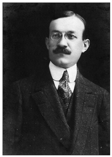
Çağdaş tarih anlayışı Meşrutiyet yıllarında önemli bir yol kat etti. Ulusal
tarih anlayışının öncülerinden biri Ahmed Refik [Altınay] idi. Cihan Harbi
yıllarında kaleme aldığı popüler tarih dizisi kitlelere tarih sevgisi aşıladı.
Türk Bilgi Derneği, popüler bilgi ötesinde, araştırmaya ve bilgi birikimine yönelmeyi amaçladı. Osmanlı aydınını bu tür bir dernek kurmaya sevk eden neden Batı’daki bilim akademileriydi. Avrupa’da bilim akademileri özellikle dil konusunda duyarlıydı. Berlin’de Prusya Bilimler Akademisi kurulurken, akademinin kurucusu ve koruyucusu Prens Frederick, kuruluş kararnamesini onaylamadan önce Latince ve Fransızca terimlerin metinden çıkarılmasını istemişti. Akademinin temel kaygısı “anadil”di. Almanya’da ve İtalya’da dil araştırmaları yapan cemiyetler sivil toplum anlayışında ön safta yer almışlardı. Leibniz, Almanlara şöyle hitap ediyordu: “Eserlerinizi kendi dilinizde yazınız! Başka milletler Latinceyi attılar ve bunun neticesi olarak oralarda, kadınlar ve gençler bütün sanatlara ve ilimlere giriş kolaylığı buldular. Halbuki biz kendi gençliğimizi, önce, çeşitli dilleri yenmek gibi bir Herkül işi başarmak zorunda bırakıyoruz ve Latince bilmek fırsatından mahrum olanları da bilgisizliğe mahkûm ediyoruz. Alman dili için harcanan emekler kuvvet bulsun!” Bu sözleriyle Leibniz bilim insanlarını bir araya gelmeye ve bir bilim cemiyeti kurmaya çağırıyordu.163
Osmanlı’nın çağdaşlaşma sürecinde Batı ülkelerindekilere benzer bir akademinin kurulması II. Meşrutiyet yıllarında gündeme geldi. Türk Bilgi Derneği bir akademi anlayışıyla kuruldu. Derneğin “ilmî reisi” eski maarif nazırlarından Emrullah Efendi öteden beri ülkede bir “akademi” oluşturmaya çabaladıklarını, Türk Bilgi Derneği’nin bu alanda bir başlangıç olduğunu, ileride devlet bu işe el attığında, bu derneğin bir tür nüve oluşturacağını vurguluyordu. Türk Bilgi Derneği’nin ilk “idare heyeti” dokuz kişiden oluştu. Reis Celâl Sahir, kâtip Köprülüzade Mehmed Fuad’dı. Akçuraoğlu Yusuf, Ahmed Ağayef (Ağaoğlu), Selanikli Doktor Rıfat, Mühendis Salim, Ziya Gökalp, Doktor Nazım ve Haşim beyler yönetim kurulunun diğer üyeleriydi.
Türk Bilgi Derneği’nin ilk genel kurulu (umumî ictima) 27 Mart 1914 Cuma günü toplandı. Derneğin idare heyeti reisi Celâl Sahir, ülkede “ilmî bir inkılâb” doğurmanın önemini ve bilimlerde yöntem ve uzmanlığın gereğini vurgulamıştı. “Türkiyyat Şubesi”, “İslamiyyat Şubesi”, “Hayatiyyat Şubesi”, “Felsefe ve İctimaiyyat Şubesi”, “Riyaziyyat ve Maddiyyat Şubesi” ve “Türkçülük Şubesi” olmak üzere altı alanda faaliyet gösterecek olan Türk Bilgi Derneği, devrin belli başlı yazar, düşünür, bilim adamı ve siyasi şahsiyetini bünyesinde toplamıştı.
Necip Asım’ın başkanlığında Türkiyyat Şubesi on üç kişiden oluşuyordu. Kâtip Köprülüzade Mehmed Fuad’dı. Akçuraoğlu Yusuf, Ahmed Ağayef, Ahmed Cevdet, Ahmed Refik, Hüseyinzade Ali, Ziya Gökalp, Bursalı Mehmed Tahir, Andon Tıngır, Arif, Fuad Raif ve Mahmud Mian şubenin diğer üyeleriydi. İslamiyyet Şubesi reisi II. Meşrutiyet’in şeyhülislamlarından Musa Kâzım Efendi’ydi. Halim Sabit’in kâtipliğini üstlendiği şubenin üyeleri Ebul’ula Mardin, Halil Nimet, Rıza Tevfik, Seyyid, Şerafeddin, Ziya Gökalp, Abdülâhad Davud, Ferid, Mansurizade Said ve Şeyh Mahmud’du. Selanikli Doktor Rıfat’ın riyasetinde oluşturulan Hayatiyyat Şubesi’nin kâtibi Reşad Bey’di. Asaf Derviş, Orhan, Bahaddin Şakir, Tevfik Rüştü, Tevfik Salim, Server Kâmil, Süleyman Numan, Akil Muhtar, Adnan ve Kadri Raşid şubenin üyeleriydi.
Derneğin “ilmî reisi” Emrullah Efendi aynı zamanda Felsefe ve İctimaiyyat Şubesi’nin başına geçmişti. Bu şubede Haşim Bey kâtipti. Üyeler Akçuraoğlu Yusuf, Ahmed Ağayef, İsmail Hakkı, Zühtü, Ziya Gökalp, Faik Sabri, Lütfi Fikri, Mehmed Cavid ve Vahid beylerdi. Ünlü matematikçi Salih Zeki, Riyaziyyat ve Maddiyyat Şubesi reisiydi. Burhaneddin Bey’in kâtiplik ettiği bu şubenin üyeleri Tahsin, Cevad Tahsin, Salim, Fatih ve Nureddin beylerdi. Altıncı ve son şube olan Türkçülük Şubesi, derneğin idare heyeti reisi Celâl Sahir’in reisliğinde toplanıyordu. Ömer Seyfeddin kâtipliğe getirilmişti. Celâl Esad, Hüseyin Cahid, Hamdullah Suphi, Salah Cimcoz, Ziya Gökalp, Kâzım Nami, Mimar Kemaleddin, Mehmed Emin, Müfid Ratıp ve Doktor Nazım beyler Türkçülük şubesinin üyeleriydi. Türk Bilgi Derneği’nin asli üyelerinin yanı sıra iki de “fahri aza”sı vardı. Bunlar 1910-1915 yılları arasında İstanbul’da bulunan Rus asıllı devrimci Alexandre Helphand (1867-1924) ya da müstear adıyla Parvus ile İttihatçı çevrelerle yakın ilişkileri olan Darülfünun müderris muavinlerinden Moiz Kohen (1883-1961) ya da dergilerdeki adıyla Tekinalp’ti.
Türkçülük Şubesi ilk toplantısını genel kuruldan iki gün sonra, 29 Mart’ta yaptı. Görüşmelerde “Türklüğe faideli hareketleri” teşvik etme ilkesi benimsendi. Dil, şiir, hikâye, gösteri (temaşa), mimari, güzel sanatlar (bedâyi), terbiye ve iktisat konularında görüşmelere yön vermek üzere birer rapor hazırlanması kararlaştırıldı. Ziya Gökalp ve Kâzım Nami dil, Mehmed Emin ve Celâl Sahir şiir, Salah Cimcoz ve Müfid Ratıp gösteri, Ömer Seyfeddin öykü, Mimar Kemaleddin ve Hamdullah Suphi mimari ve güzel sanatlar, Tevfik Rüştü ise sağlık (hıfzıssıhha) raporlarını hazırlamakla yükümlü kılındılar.
Türkçülük Şubesi’nin toplantılarında çok geniş bir bilgi alanı kapsanıyordu. En gözde konuşmacılardan biri Parvus’tu. 1905 Rus Devrimi’ne katılan, Sibirya’ya sürülen Parvus, Kautsky, Troçki, Rosa Luxemburg ve Lenin gibi tanınmış sosyalistlerle aynı ortamları paylaşmış bir düşünürdü. Türkçülük Şubesi’nde yaptığı konuşmalarda iktisadi sorunlara eğiliyor, Osmanlı Devleti’nin bir an önce Avrupa sömürgeciliğinin boyunduruğundan kurtulması gerektiğini vurguluyordu.
Türk Bilgi Derneği ilk aşamada ülkede “usul ve ihtisas”a, diğer bir deyişle bilimsel yöntem ve uzmanlığa yönelecek bir çevre oluşturmak amacıyla Bilgi Mecmuası’nı yayımladı. İlk sayısı Kasım 1913’te çıkan dergi Haziran 1914’e kadar yedi sayı yayımlandı. Bu dergide Parvus’un iki önemli yazısı yer aldı. Bunlar “Türkiye’nin Malî Esareti”164ile “Türkiye için Malî Esaretten Kurtuluş Yolları”165başlıklarını taşıyan uzun makalelerdi. Yine Türkçülük Şubesi toplantılarında Tevfik Rüştü verem ve frengi konularında halkı uyaracak sağlık müzelerinin gereğini vurguluyordu.166Mimar Kemaleddin Türk mimarisinin gerileme nedenleri üzerine konuşmuştu. Bu arada Batı’da her ulusun bir “millî marş”ı olduğunu ve Osmanlı’da bunun eksik olması nedeniyle 10 Temmuz “Hürriyetin ilanı”nda kimi çevrelerde özgürlüğün simgesi olarak Fransız ulusal marşı Marseillaise’in söylendiğini gören Türkiyyat Şubesi bir “millî marş” yarışması açmıştı. Kazanana on liralık bir ödül verilmesine ve Mehmed Emin, Ziya Gökalp ve Celâl Sahir’in şiirlerinin birinin bu marş için güfte olarak kullanılmasına karar verilmişti.
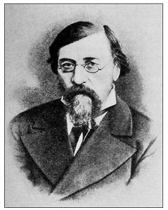
Narodnik hareketiyle ilgili olarak anılan bir başka isim materyalist filozof
Nikolay Gavriloviç Çernişevski idi. 1860’lı yıllarda devrimci demokrat
hareketin öncüsüydü. Vladimir Lenin üzerinde önemli etkisi oldu.
Derginin aktif olan bir diğer birimi Felsefe ve İctimaiyyat Şubesi’ydi. Bu şube ilk aşamada kendi uğraş alanına giren bilimleri belirleme gereği duymuştu. Ziya Gökalp, bu amaçla “Felsefî ve İctimaî Bilgilerin Tasnifi” başlığını taşıyan bir araştırma hazırlamıştı. Aristoteles, Bergson, Durkheim ve Harald Höffding’in görüşlerine yer veren Gökalp, bilime dört alan, kendi deyimiyle sınıf belirliyordu: Bunlar 1) Mantık; mantıkiyyat ilh. 2) Mâba’de’t-tabîiyye (metafizik), sanat, 3) İctimaiyyat ve ictimaiyyatın ulum-ı muavenesi ve 4) Ruhiyyat, felsefe, terbiye idi. Şubenin gündemindeki ikinci madde izlenecek “usul” ya da yöntemdi. Ülkede bilim alanında “Kurun-ı vusta” ya da Ortaçağ kalıntısı skolastik zihniyet hüküm sürüyordu. Osmanlı ülkesinde bilimin ilerlemesi için “vatana ifa edilecek en mühim hizmet”in bu yöntemlerle savaşmak olduğu vurgulanıyordu.167Bu arada, 1914-15 ders yılından itibaren Darülfünun konferans salonunda “tecrübe ve müşahede usullerinin ulûmdaki tatbikâtına dair”, diğer bir deyişle deney ve gözleme dayanan pozitivist bir bilim anlayışının önemini vurgulayan seri konferanslar düzenlenmesine karar verilmişti.
Türkiyyat Şubesi’nin kısa sürede en etkin şube olduğu gözlemlendi.16830 Mart 1914’te toplanan şube en kısa sürede yayına geçmeye karar verdi. Necip Asım’ın “Hibettü’l-Hakayık” üzerine incelemesi, yine Necip Asım’ın Köprülüzade Mehmed Fuad’la birlikte derlediği “Osmanlı Türklerinin Halk Edebiyatı” ve Andon Tıngır’ın “Türk Dilinin Sarf-ı Tahlilîsi” adlı çalışması basılacak ilk eserlerdi. Üyelerce hazırlanan raporlar her hafta toplanan Türkiyyat Şubesi’nde okunuyor ve tartışılıyordu. Bursalı Mehmed Tahir’in “Misretü’l-Ulum” adlı eski bir sarf kitabı hakkındaki incelemesi, Necip Asım’ın “Tarih Nokta-i Nazarından Darb-ı Mesellerimiz”i, Andon Tıngır’ın “Ne Edatı Hakkında Tetkikat”ı, Ahmed Ağayef’in “Şehname’ye Göre Turanîler”i, Akçuraoğlu Yusuf’un “Türkler ve Hilâfet” üzerine çalışması bunlar arasında yer aldı. Türkiyyat Şubesi’nin odaklandığı alanlardan bir diğeri dildi. “Anadolu’nun mahallî lehçeleri” üzerinde duruluyor, bu konuda bilgi toplanması karara alınıyordu.
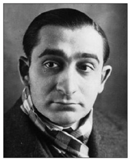
Pierre Mendès France başta olmak üzere kimi sola yatkın Fransız Radikal Parti
mensupları “Jeune Turc” (Jön Türk) diye nitelendirilmişlerdi. Fransız Radikal Parti ile
Jön Türkler’in solidarizme olan inançları sayesinde yakınlaşmaları kaçınılmazdı.
Türk Bilgi Derneği, bir akademi olmanın yanı sıra geniş bir kesime seslenme gereği duymuştu. Bu nedenle Celâl Sahir’in önerisiyle halk için kitaplar yayımlanması uygun görülmüş, Fransa ve Almanya’dan kataloglar sipariş edilmişti. Keza gösteri sanatları için de Paris ve Berlin’e yazılarak bu konuda bilgi edinilmişti. Türk Bilgi Derneği’nin çalışmaları Osmanlı’nın Cihan Harbi’ne girişiyle birlikte aksadı. Geriye yedi sayılık geniş bir cildi oluşturan Bilgi Mecmuası kaldı. Bilgi Mecmuası o günkü Osmanlı basınında en “akademik” yayındı. Dergide yer alan yazılar tarih, dil, edebiyat, felsefe, siyaset bilimi, sosyoloji, iktisat, eğitim, pedagoji, tıp ve matematik gibi çok çeşitli bir yelpaze oluşturdu. Arap edebiyatı, Hindistan’daki Türklük, tifo, felç, kalp hastalıkları ve benzeri son derece farklı konular dergi sayfalarında yer aldı ve geniş bir yazar kadrosuna sahip oldu. O günün koşullarında gerçek bir “akademi” dergisi hüviyetini kazandı.
Düzeyi belki birkaç yıl önce yirmi sekiz sayı yayımlanmış olan Ulum-ı İktisadiyye ve İctimaiyye dergisi ile karşılaştırılabilirdi. Kısa ömürlü olmasına karşın Meşrutiyet yılları Osmanlı bilgi birikiminde önemli bir atılımı simgeleyen Bilgi Mecmuası, savaş yıllarında Osmanlı dergiciliğinin çeşitliliğine katkıda bulunacaktı. Savaşın zor koşullarına karşın Türk Bilgi Derneği çevresinde toplanan Osmanlı aydınları, 1914-1918 yıllarında Osmanlı döneminin en derinlikli ve bilimsel dergilerini çıkardılar. Artık dergiler kendi alanlarında uzmanlaşacak, İktisadiyyat Mecmuası, İctimaiyyat Mecmuası, İslam Mecmuası, Milli Tetebbular Mecmuası, Ulum-ı Siyasiyye ve İktisadiye Mecmuası, Yeni Mecmua, İslam Dünyası, Edebiyat-ı Umumiyye Mecmuası, Çiftçiler Derneği Mecmuası, Ticaret-i Umumiyye Mecmuası, Sanayi Mecmuası gibi yayınlar son dönem Osmanlı “aydınlanması”nın en seçkin dergileri olacaktı.
Savaş ortamında yayımlanan bu dergilerde özellikle sosyal ve beşerî bilimler alanında, derinlik taşıyan, çok yönlü, Osmanlı’ya yeni açılımlar kazandıran düzeyi yüksek yazılar yer aldı. Yazarların büyük çoğunluğu Türk Bilgi Derneği bünyesinde bir araya gelen Osmanlı aydınlarıydı. Ahmed Ağayef, Köprülüzade Mehmed Fuad, Akçuraoğlu Yusuf, Mehmed İzzet, Mustafa Şeref (Özkan), İsmail Hakkı (Baltacıoğlu), Abdullah Cevdet (Karlıdağ), Necip Asım (Yazıksız), M. Zekeriya (Sertel), Doktor Tevfik Rüştü (Aras), Rıza Tevfik (Bölükbaşı), Ahmed Zeki Velidi (Togan), Mehmed Emin (Yurdakul), Andon Tıngır, Seyyid Haşim, Moiz Kohen [Munis Tekinalp], Mimar Kemaleddin dergiye katkıda bulunanlar arasındaydı. Bu kadro, bir anlamda, bir tür Osmanlı Rönesansı’nın temsilcileri oldular. II. Meşrutiyet’in sonlarında Osmanlı Devleti savaşı yitirirken bağrından yepyeni bir insan dokusu çıkarıyordu. Bu doku, çetin Milli Mücadele sınavının ardından Cumhuriyet’in temellerini atacak aydın zümrenin ta kendisiydi.
İzmir’de Halka Doğru
II. Meşrutiyet’in ilk yarısında Türk Yurdu ve Halka Doğru çevresinde oluşturulan halkçılık Cihan Harbi ile birlikte yeni bir evreye girdi. Savaş öncesi “halka doğru” hareketi alt gelir gruplarına yönelik bir halkçılıktı. İlk dönem halkçı düşüncenin öncülerinden Yusuf Akçura, halk sözcüğünden “köylükte yaşayan az toprak sahibi, yahud büsbütün topraksız rençperler” ve “şehirlerde geçinen ufak esnaf ve gündelikçi ameleler, ırgatlar”ın anlaşılması gerektiğini savunuyordu. Diğer bir deyişle, halk sözcüğü sınıfsal bir bağlamda kullanılıyor, gelir düzeyi belirleyici oluyordu. Oysa, Cihan Harbi ile birlikte halk sözcüğünün içeriği farklı doğrultuda gelişti: Taşra İttihatçıları, halkı artık “orta sınıf” olarak görüyor, uluslaşma sürecinde orta sınıfın öncülüğünü öngörüyordu. Diğer bir deyişle uluslaşma süreci sınıfsal bir nitelik kazanıyor, “halk” sözcüğü ulus-devletin maddi tabanını oluşturuyordu.
Nitekim bu doğrultuda en ilginç gelişme İzmir’de izlenecekti. İttihat ve Terakki merkez-i umumi üyesi Doktor Nazım Bey, İzmir Valisi İttihatçı Rahmi Bey ve İttihat ve Terakki İzmir kâtib-i mesulü Mahmud Celâl [Bayar] Bey’in çabaları sonucu İzmir’de bir “Halka Doğru Cemiyeti” kurulmuştu.169Cemiyetin nizamnamesinin ilk iki maddesi amacını belirliyordu: “Halk arasında ilmî ve harsî terbiyeyi neşr ve tamim maksadiyle ‘Halka Doğru’ ismi altında bir cemiyet teşekkül etmiştir. [madde 1]; Halkın tenvir ve terakkisine hâdim muhtelif şuabât-ı ilmiyyeye ait kitapları kütüphane suretiyle tertip, mevkut ve gayr-ı mevkut risale ve mecmualar neşr, okuma yurtları güşad, ilmî musahabeler tertip ve matbualar tesis etmek, hülasa halkın seviye-i fikriyye, ahlakiyye, iktisadiyye ve ictimaiyyesini yükseltecek ulum ve maarifi herkes tarafından kolaylıkla anlaşılabilecek bir üslup ile cem’ ve telkin ederek ehven fiyatlarla tab’ ve neşr ve tevzi ve vesait-i münasibe ile okunmasını teshil ve halk arasında esasât-ı ilmiyye ve harsiyeyyi tamim etmek Halka Doğru Cemiyeti’nin gaye-i teessüsünü teşkil eder [madde 2].”
Cemiyet 1918 yılı yaz aylarında İzmir’de Halka Doğru adında bir dergi çıkarmaya başlamıştı.170İkinci Halka Doğru dergisinin “halk” anlayışı ilkinden epey farklıydı. Dergi yine “halk” için çıkarılıyordu, ancak “halk” sözcüğü artık düşük gelir gruplarını, topraksız ya da az topraklı köylüyü, gündelikli işçi ve küçük esnafı dışlıyordu. Derginin 1 Şubat 1919 tarihli ilk sayısında yer alan “Maksat ve Meslek” başlıklı yazıda “Halk tabirinden maksadımız milletin tahsil ve terbiye, idrak ve irfanca orta sınıfını teşkil eden tabakadır” deniyordu. “Ümmi” ve “avam” denilen mektep görmemiş ya da okuma yazma bilmeyen kesim, dergiden doğal olarak bir şey anlayamayacağı gibi “havas” denilen, yükseköğretim görmüş yüksek tabakaların da dergiyi izlemeleri beklenmiyordu. Dergi “ancak Türk milletinin orta tabakasına milli benlik ve ictimaî varlığını duyurmaya gaye edinmiş bir hars mecmuası”ydı.171Böylece “avam”, “halk” ve “havas”tan oluşan üçlü bir tabakalaşmayı öneren Halka Doğru, Türk ulusunun geleceğinin güvencesini oluşturacağı kanısında olduğu orta sınıfa bilinç götürmeyi amaçlıyordu. Ancak, Halka Doğru’ya göre, Halka Doğru Cemiyeti, ileride, “avam” denilen, çoğunluğu köylüden oluşan sınıfa da elden gelen yardımı esirgemeyecek, resimli dergiler bastırıp dağıtacaktı. Ayrıca bu kesimin “ayaklarına kadar” uzman ve üyelerini göndererek konferanslar verdirecekti. Öte yandan, orta sınıfta bir okuma zevki uyandırmak amacıyla duru bir dil ve üslup benimseyeceğini kaydeden Halka Doğru dergisi, bu amaçla Ahmed Rasim, İsmail Hakkı, Ömer Seyfeddin, Kâzım Nami gibi İstanbul’un ünlü yazarlarından yazı vaadi almıştı.
Mesul müdürlüğünü Mahmud Celâl’in [Bayar] üstlendiği dergi, şiir, öykü türü edebiyata, tarih, terbiye sağlık, dini nasihat konularına, ictimaiyyat ve iktisadiyyata sayfalarında yer verecek, ancak tüm yazılarında halkı gözetecek, olanaklar ölçüsünde yerel ve uygulamaya dönük konuları, genel ve kuramsal konulara yeğleyecekti. Halka Doğru Cemiyeti, ayrıca, “halk için yazılmış” kitaplar yayımlayarak bir “Halka Doğru Kütüphanesi” oluşturacaktı. Cemiyet ilk olarak, frengi ve frengiye karşı alınacak önlemleri içerir bir kitap çıkarıp bunu halka parasız dağıtmayı kararlaştırmıştı. Ayrıca, Kordon boyunda bir daire tutarak, burada halk için bir kitaplık açılacaktı.172Bu İzmir’in Milli Kütüphanesi’nin doğuşu anlamına geliyordu.
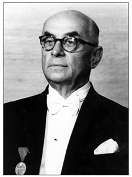
İzmir’de yayımlanan Halka Doğru dergisinin mesul müdürlüğünü
Mahmud Celâl [Bayar] üstlenmişti. Dergi halka dönük bir üslupla şiir,
öykü türü edebiyatın yanı sıra toplumsal ve iktisadi konulara
yer verecekti.
Bu arada İzmir Milli Kütüphane Sineması’nda “Halk için” konferanslar düzenleniyor ve bu konferansların metinleri dergide yayımlanıyordu. Nitekim ilk sayıda “terbiye mütehassısı” Selim Sırrı’nın [Tarcan] “Halk İçin” başlıklı konferansına yer verilmişti.173 “Orta sınıf” ağırlıklı Halka Doğru Cemiyeti’nin İzmir’de kurulması bir rastlantı değildi. İttihat ve Terakki’nin Birinci Dünya Savaşı ile birlikte uygulamaya başladığı “milli iktisat”, İzmir yöresinde, Müslüman-Türk eşrafa geniş olanaklar tanımıştı. İttihat ve Terakki’nin yerel örgütlerinin desteği ve savaşın olağanüstü koşullarının sonucu, yörede, kısa sürede Müslüman-Türk bir “orta sınıf” oluşmuştu. Cemiyetin kurucularından, İttihat ve Terakki’nin Merkez-i Umumi üyesi Doktor Nazım Bey, Halka Doğru Cemiyeti üzerine Vakit gazetesine verdiği bir demeçte bu gelişmeleri ilginç bir dille anlatıyordu.174İzmir ve yöresindeki servet birikimini her fırsatta vurguluyor, savaşın ülkenin hemen her tarafını zengin ettiğini, ancak, bu olağanüstü durumdan kaynaklanan servetten en büyük payı İzmir’in aldığını belirtiyordu. Savaşla birlikte “iktisadi uyanıklık” başlamış, İzmir bundan etkin bir biçimde yararlanmıştı. Savaş öncesi rıhtım boyunda sıralanmış olan kahvehaneler birer birer kapanmış, yerlerine birer “idarehane” ya da işyeri açılmıştı. Artık nereye bakılsa yeni kurulmuş kolektif şirket tabelaları göze çarpıyordu.
Öte yandan savaşın neden olduğu fiyat artışından köylü payına düşeni almış, üretici kısa sürede beklenmedik bir servete kavuşmuştu. Paranın değeri köylü nezdinde o denli düşmüştü ki “bir köylü kadınının, kızına ‘eti gösteren’ [ajour] bir çorap tedariki için bilatereddüd üç lira vermesi ahval-i tabiiden addedilmeye başlanmıştı.” Doktor Nazım buradan hareketle sözü Halka Doğru Cemiyeti’nin kuruluşuna getiriyor, ülkenin geçirdiği bu dönüşümleri göz önünde bulunduran İzmir aydınlarının “şu servet ve saman zamanından bilistifade İzmir’in maddeten olduğu gibi manen de yükseltilmesi”ne koyulduklarını söylüyordu. Bu sahada atılacak ilk adım, ilmi halk arasında yaymak, halkın bilgi düzeyini çağdaş yüzyılın gerekleri düzeyine çıkarmaktı. Bu nedenle İzmir “mütefekkirin”i Halka Doğru Cemiyeti’ni kurmaya karar vermişti.
Doktor Nazım, Tanin gazetesine verdiği demeçte ise cemiyetin doğuşunu şu sözlerle ifade ediyordu:175 “Bu âli fikrin tezahüründe tesadüf ben de İzmir’de bulundumdu. Şehrin İttihat ve Terakki Kulübü’nde ictima eden ve adedi 24’ü geçmeyen erbab-ı servet ve mürüvvetin bu teşebbüsün ulviyetini takdir ederek bu uğurda sarf edilmek üzere derhal 19.500 lira gibi mühim bir meblağı bilatereddüt teberru ettiklerini görmek gibi kalbe ferah ve ümid veren bir hadiseye şahid oldum.” Doktor Nazım Bey, daha 1906 yılında Paris’teki Osmanlı İttihat ve Terakki Cemiyeti’nin üyesi olarak başında sarık, sırtında cüppe, çenesinde sakal, Hacı Mehmed Efendi takma adıyla, Atina üzerinden Selanik’e gelmiş, buradaki Osmanlı Hürriyet Cemiyeti’ni Paris’e bağlamıştı. Ardından Tütüncü Yakup Efendi adıyla İzmir’e geçmiş, cemiyetin Ege yöresindeki örgütlenişini sağlamıştı.176Halka Doğru Cemiyeti’nin diğer kurucuları, İzmir Valisi İttihatçı Rahmi Bey ve İttihat ve Terakki İzmir mesul kâtibi Celâl [Bayar], savaşın başından beri Ege yöresinde Müslüman-Türk eşrafı, şirketlerde, kooperatiflerde, yerel bankalarda bir araya getirmişlerdi.177
“Halka doğru” gidenler bu kez, Türk Ocakları’nın Anadolu’ya yönelik Narodnik eğilimleri ötesinde, Müslüman-Türk unsurun, özellikle dış odaklara karşı, ekonomik çıkar birliğini gözetiyorlardı. “Halka doğru” hareketi artık bir “orta sınıf” hareketiydi; maddi tabanı vardı; ekonomik çıkarlarla kültürel oluşumu aynı potada eritmeyi amaçlıyordu. İttihatçılar, bundan böyle “halkçı”ydılar; Anadolu eşrafıyla bütünleşiyor, Anadolu’da “ulusal pazar” oluşturmanın gereğine inanıyor, yabancı sermayeye karşı tavır alıyorlardı. Bu nedenle ulusçulukla halkçılığın eşgüdümlenmesi gerekiyordu. Aynı yıllarda, Ziya Gökalp’in öncülüğünde İttihatçı yayın organı Yeni Mecmua’da halkçılığın kuramsal temelleri atılacaktı.178
136 N. Mallouf, Dictionaire Français-Turk – Fransevî ve Türkî Lugatnamesi, Paris: Maisonneuve et Cie, Libraires-Editeurs, 1856. Bu sözcükte peuple karşılığı olarak “kavim, halk, cemaat, millet, ahâli, reaya” veriliyordu.
137 Ş(emseddin) Sami (Fraşeri), Kamus-ı Fransevî – Fransızcadan Türkçeye Lügat – Dictionnaire Français-Turk, İstanbul: Mihran Matbaası, 1299/1882.
138 Hakkı Behiç, “Hikmet-i ictimaiyyeye dair: Cemiyet-i beşeriye nasıl muhafaza-i hayat eder?”, Musavver Muhit, cilt 1, nümero 12, 10 Kânun-ı sani 1324, s. 188-190.
139 Rusya’daki “Halka doğru” hareketi için bkz. Franco Venturi, Roots of Revolution, New York, 1966, s. 469-506 (The Chaikovskits and the Movement “to go to the people” bölümü).
140 M. Asım Karaömerlioğlu, “On Russian Populism: To the memory of Allan K. Wildman”, UCLA Historical Journal içinde, cilt 15, 1996, s. 131-148.
141 Niyazi Berkes, Türk Düşününde Batı Sorunu, Ankara: Bilgi Yayınevi, 1975, s. 231-232.
142 Ziya Gökalp, “Türkçülük Nasıl Doğdu”, Yeni Mecmua, sayı 40, 18 Nisan 1918, s. 263. “Ali Bey Petersburg Darülfünunu’nda iki tesir altında kalmıştı: Panislavizm, sosyalizm. Ali Bey Panislavizmden Pantürkizm mefkûresini çıkardığı gibi, sosyalizmden de halkçılık ahlakını aldı”.
143 Niyazi Berkes, Türk Düşününde Batı Sorunu, Ankara: Bilgi Yayınevi, 1975, s. 231-232. “Rusya’daki bu halkçılık akımının üç dolaylı yoldan Türk aydınları arasına da serpintileri geldi. Birincisi, Balkan ve özellikle Bulgar aydınları yoluyla. Narodnikî görüşleri bunlar arasında, özellikle yazar ve öğretmenler arasında, Meşrutiyet’ten önceki yıllarda da güçlenmişti. İkincisi, Rusya’dan gelen Türkler oldu. Örneğin Petersburg Üniversitesi’nde okuyan Hüseyinzade Ali, oradaki devrimci öğrenci komünlerini görmüş, hatta Namık Kemal’in adını bile ilk kez bunlardan duymuştu. İstanbul’a gelip Tıp Fakültesi’ne girince, birkaç arkadaşıyla birlikte bu narodnikî modelinde ilk üniversiteli gizli öğrenci cemiyeti olan İttihat ve Terakki Cemiyeti’ni kuranlardan oldu. (...) Üçüncü dolaylı yol, Ermeni aydınlarının başlattığı ve ulusçu Taşnak akımından ayrı olan sosyalist Hınçak akımıdır, çünki bu ikincisi narodnikî fikirlerinin güçlü etkisi altında doğmuştu.”
144 Niyazi Berkes, Türk Düşününde Batı Sorunu, Ankara: Bilgi Yayınevi, 1975, s. 237. “Ziya Gökalp ... halkçılığı Marksist sosyalizmden ayırarak Durkheim’in sosyolojizmine bulayıp ondan tam Osmanlı İmparatorluğu’nun batacağı sırada tesanütçülük dediği solidarizm ve meslekî temsilcilik ideolojisine ulaştı.”
145 Şerif Mardin, İdeoloji, Ankara, 1976, s. 82-83.
146 “Halka Doğru Cemiyeti”, Türk Yurdu, yıl 6, cilt 13, sayı 9, 20 Kânun-ı evvel 1333, s. 141-142.
147 “Halka Doğru’nun daimi yazıcıları”, Halka Doğru, yıl 1, sayı 1, 11 Nisan 1329, s. 141-142.
148 Akçuraoğlu Yusuf, “Halka”, Halka Doğru, cilt 1, sayı 22, 5 Eylül 1329, s. 169-172; sayı 23, 12 Eylül 1329, s. 177-178; sayı 25, 26 Eylül 1329, s. 193-194; sayı 26, 3 Teşrin-i evvel 1329, s. 193-194; sayı 27, 10 Teşrin-i evvel 1329, s. 209-211; sayı 31, 7 Teşrin-i sani 1329, s. 237-238.
149 H.D., “Halka Doğru gidenler”, Halka Doğru, yıl 1 sayı 24, 19 Eylül 1329, s. 185-186. Tıbbiyeli İrfan o günkü dille yola çıkışlarını şöyle anlatıyordu: “Memleketin hakk-ı hayatını, Türk köylüleri yükseltmekle kazanacağına derin ve sarsılmaz bir iman ve itikadla kani olanlardan olduğumuz için büyük bir ekseriyetin yaptığı gibi bizim de bunlara karşı lakayd kalmamaklığımız icab ediyordu. Zaten bu asker kardeşlerimizin yaşadığı muhiti görmek, tarz-ı hayatlarını tetkik etmek ancak Türk gençlerine ait bir vazifedir. Hayat-ı ictimaiyyesi yükselmemiş olan herhangi kavmin tarih-i terakkiyatı açılırsa gençlerin, genç fikirlilerin en büyük bir kuvvet, ne derece mühim bir âmil oldukları kolayca göze çarpar. Bir memleketin gençleri hayat-ı milliyeye müteallik olan her hususta bütün maniaları, engelleri kırmağa azmetmiş, milliyetine ait meselelerde her tehlikenin fevkine çıkar, cesur ve müteşebbis ve kırılmaz bir kuvvet olmalıdır.
Temiz havali ormanları, bayırları, yüksek yaylaları, sıhhi ve mevadd-ı mideviyyeden zengin gıdalarına rağmen bugünkü kardeşlerimizin yine böyle bir iskelet gibi kuru yaşamalarını da mesleğimiz namına ayrıca şayan-ı tetkik bir mesele-i sıhhiyye telakki ediyor ve bir an evvel Anadolu’nun köy hayatına koşmak istiyor idik. Felaketlerin, musibetlerin tevâlisi de bu arzumuzu kuvvetlendiriyor idi. İşte aynı emel ve gaye arkasında koşan biz gençler aynı mektebin, Mekteb-i Tıbbiyye’nin muhit-i feyz ve irfanında birleştik ve yaya olarak yapacağımız İzmir seyahatinin programını hazırladık. Edindiğimiz erkân-ı harbiyye haritalarımızı, yol pusulalarımızı, köylülere meccanen dağıtmak için aldığımız birçok sulfato şişelerini, çiçek aşısı yapmak için aldığımız aşı tüplerini yüklenerek on beş yirmi okkalık yükümüzle Temmuz’un beşinci cuma günü İstanbul’u terk ettik. Yakın bir atide geçireceğimiz hararetli bir hayatın zev-i tahayyülü ile sermest oluyor ve milli şairimiz Mehmed Emin Bey’in: ‘Ben bir Türk’üm, dinim cinsim uludur / Ateş ile özüm sinem doludur’ teranesini hep bir ağızdan tekrarlıyorduk. Köylülere temin edeceğimiz maddi ve manevi faidelerden başka Türk gençlerinin artık kasvetli odalarda, salon köşelerinde tembellik ile meşgul olmadıklarını, Türk gücünün her şeye yettiğini de âleme gösterecek idik. Bundan sonra bütün gençler tarafından yapılmasını temenni ettiğimiz bu hayırlı seyahatlerin ilk adımını biz attığımız için yüreğimiz lekesiz ve samimi bir duygu ile çarpıyordu.”
150 Gökalp, “Halk Medeniyeti -1- Başlangıç”, Halka Doğru, yıl 1, sayı 14, 10 Temmuz 1329, s. 107-108.
151 Gökalp, “Halk Medeniyeti -2- Resmi Teşkilat, Halk Teşkilatı”, Halka Doğru, yıl 1, sayı 19, 15 Ağustos 1329, s. 148-149.
152 Köprülü Fuad, “Yeni bir ilim. Halkiyyat: Folklore”, İkdam Gazetesi, 24 Kânun-ı sânî, 1329. Gönderme yapan: Suavi Aydın “20. Yüzyılı Başlarında Türkçülük, Türkoloji Çalışmaları ve Fuad Köprülü”, içinde: Mehmet Fuat Köprülü, editör: Yahya Kemal Taştan, Ankara: Kültür ve Turizm Bakanlığı Yayını, 2012, s. 151-152.
153 İspartalı Hakkı, Köyümden Geliyorum, baskıya haz. Şevket Aziz Kansu, Ankara: 1971, s. 13. “İstanbul, Anadolu’yu eskiden ihmal ederdi. (...) Biz, İstanbul’u yani memleketin başını, gövdesiyle meşgul etmek için hayli uğraştık: Halka Doğru diye ayrıca bir gazete bile çıkardık. Maksadımız İstanbul’un beylerini, efendilerini ‘halk’ ile ‘Anadolu’ ile alakadar etmek idi.”
154 M. Şemseddin, Zulmetten Nura, 3. tab’ı, İstanbul: Evkaf-ı İslamiye Matbaası, 1341.
155 Ömer Seyfeddin, “Türk Sözü”, Türk Sözü, yıl 1, sayı 1, 12 Nisan 1330, s. 3. Ömer Seyfeddin’in Türk Sözü’nde dille ilgili diğer yazıları şunlardı: “Halk ne der?”, sayı 2, 18 Nisan 1330, s. 9-11; “Umumî ve Hususî Türkçe”, sayı 3, 24 Nisan 1330, s.18-19; “Türkçeye karşı Enderunca”, sayı 4, 1 Mayıs 1330 s. 25-27; “Osmanlıca değil Türkçe”, sayı 5, 8 Mayıs 1330, s. 33-35; “Türkçeye kimler ‘Osmanlıca’ der?”, sayı 7, 22 Mayıs 1330, s.49-50; “Türkçe’ye dair - Musahabe”, sayı 9, 5 Haziran 1330, s. 66-70; “Türkçe ve ilim - Musahabe”, sayı 10, 12 Haziran 1330, s. 73-75; “Türk sarfına ve şivesine dair”, sayı 11, 19 Haziran1330; “Kelimelerin mânâları nerededir?”, sayı 12, 26 Haziran 1330, s. 89-90; “Lisanın sadeleşmesi”, sayı 13, 3 Temmuz 1330, s. 97-99; “İstanbul Türkçesi hangisidir?-1” sayı 14, 10 Temmuz 1330, s. 105-107; “Sağlam zemin”, sayı 15, 17 Temmuz 1330, s.113-117; “İstanbul Türkçesi hangisidir?-2”, sayı 16, 24 Temmuz 1330 s.121-122.
156 Cemiyet ve dergisi için bkz. Arda Odabaşı, “Millî Talim ve Terbiye Cemiyeti ve Mecmuası”, Müteferrika, sayı 38, Güz 2010/2, s. 105-117.
157 “Halka Doğru Cemiyeti”, Türk Yurdu, yıl 6, cilt 13, sayı 9, 20 Kânun-ı evvel 1333, s. 141.
158 “Halka doğru”, Vakit, 23 Mart 1334/1918, s. 2.
159 F. R. “Halk için çalışmak”, Yirminci Asırda Zekâ, nümero 30, 24 Nisan 1330, s. 86.
160 Hayyeale’l-Felâh – Osmanlı İttihad ve Terakki Cemiyeti’nin Kardaşlarına Hediyesi, Selanik, 1326, s. 4.
161 Zafer Toprak, “Türk Bilgi Derneği (1914) ve Bilgi Mecmuası”, Osmanlı İlmi ve Mesleki Cemiyetleri içinde, yayına haz. Ekmeleddin İhsanoğlu, İstanbul: Edebiyat Fakültesi Basımevi, 1987, s. 247-254.
162 Ömer Seyfeddin, “Türk sözü”, Türk Sözü, yıl 1, sayı 1 12 Nisan 1330, s. 1-3.
163 Hasan Cemil Çambel, Türkler: Dilleri ve Kaderleri, Ankara: Türk Tarih Kurumu, 1949, s. 25-26.
164 Parvus, “Türkiye’nin Malî Esareti”, Bilgi Mecmuası, yıl 1, sayı 3, Kânun-ı sânî 1329, s. 225-253.
165 Parvus, “Türkiye İçin Malî Esaretten Kurtuluş Yolları”, Bilgi Mecmuası, yıl 1, sayı 5, Mart 1330, s. 437-477.
166 Doktor Tevfik Rüşdü, “Sıhhî Müze Hakkında”, Bilgi Mecmuası, yıl 1, sayı 6, Nisan 1330, s. 650-655.
167 “Felsefe ve İctimaiyyat Şubesi”, Bilgi Mecmuası, yıl 1, sayı 6, Nisan 1330, s. 656-657.
168 “Türkiyyat Şubesi”, Bilgi Mecmuası, yıl 1, sayı 6, Nisan 1330, s. 658-660.
169 Tarık Z. Tunaya, Türkiye’de Siyasi Partiler 1859-1952, İstanbul, 1952, s. 389; Celâl Bayar, Ben de Yazdım: Milli Mücadele’ye Giriş, cilt 5, İstanbul, 1967, s. 1550-1552. Cemiyetin nizamnamesi için bkz. “Halka Doğru ve nizamnamesi”, Tanin, 15 Kânun-ı evvel 1333, s.
170 Efdal Sevinçli, “İzmir Dergileri: 2 (İttihat Terakki edebiyat yapıyor: Halka Doğru Mecmuası,)” Dönemeç, Mayıs 1980, sayı 34, s. 4-8.
171 “Maksat ve Meslek”, Halka Doğru Mecmuası, sene 1, sayı 1, 1 Şubat 1335, s. 1.
172 “Halka Doğru Cemiyeti”, Sabah, 8 Ağustos 1918, s. 2.
173 İlk sayıda ayrıca İsmail Hakkı’nın (Darülfünun müderrislerinden) “İctimaiyyat: Milli terbiye nedir?; Ahmed Rasim’in “Tarih: İzmir Valileri”, Ahmed Talat’ın “Edebiyat: Halk edebiyatı hakkında -1” başlıklı yazılarıyla Kâzım Nami’nin “Anama” şiiri yer alıyordu.
174 “İzmir’de büyük bir teşebbüs”, Vakit, 9 Kânun-ı evvel 1333, s. 1. Gazetede şu satırlar yer alıyordu: “Son senelerde millî iktisat ve ticaret hususunda en ziyade terakki eserleri gösteren ve bu terakkinin tabii bir neticesi olarak halkı ekseriyetle zengin olan bu müterakki vilayetimizden bahsetmek şüphesiz memnuniyeti mucib olur. İzmir’in bugünkü iktisadî ve malî vaziyetinde şahsî teşebbüslerle beraber, hükûmetin muavenetinin de büyük bir dahl ü tesiri vardır. Bugünkü halin harpten sonra da idamesi ve hakiki ve devamlı terakki ve temeddün temellerinin kurulması için fikirlerce, ruhlarca esaslı tahavvüller [değişiklikler] yapılması ve halkın zihnî ve ahlakî seviyesinin yükselmesi lazımdır; bu da ancak ilim, irfan, hars propagandasıyla olabilir. İlmin, harsın teşekkülünü hükûmetin maarifinden, mekteplerden beklemek doğru değildir. Asıl terbiye tahsil sîninden [yıllarından] sonra başlar. Binaenaleyh İzmir ahalisinin, kendi say ve teşebbüsleriyle bu irfan binasına başlamaları lazımdır. Son iktisat ve ticaret cereyanları neticesinde tabii olarak İzmir’de ticaret ve köylü pek zenginleşmiştir. Eskiden İzmir’de iki kişi bir araya gelemezdi. Halbuki şimdi gördüm ki, iki arkadaş bir araya gelip hemen bir şirket tesis edivermişler, bu suretle kolektif şirketler İzmir’de çoğalmıştır. İzmir’in yeni tüccarlarında ve zenginlerinde gördüğüm şayan-ı teşekkür bir hal, israf ve sefahat olmayıp hemen hemen daha ziyade hisset [hasislik, tasarrufa yönelme] bulunmasıdır. Bu, biriken azim sermayelerin harpten sonra da faideli teşebbüslere sarf edileceğine delildir. İzmir’de ticaretin terakkisine yardım eden sebeplerden biri mahalli hükûmetin ticareti serbest bırakmış olmasıdır. Ahalide ticaret işleri için hükûmete karşı büyük bir itimad vardır. Akhisar’da aşar fazlası olarak alınan yüzde 12’yi geçen sene köylüye terk edilmiş ve ahali bu parayı sermaye ittihaz ederek bir köylü bankası açmışlardır. Memleketimizde ilk defa vaki olan bu malî teşebbüsün büyük bir ehemmiyeti vardır. İzmir’in sair mahallerinde buna mumâsil mahalli müesseseler açılmak üzeredir.
İzmir’de büyük bir bulvar açılmakta olduğu malumdur. Bu bulvar, kasaba istasyonundan gümrüğe kadar 1250 metre boyunda ve 40 metre arzında olacaktır. Bu bulvar evvelce ecnebî sermayedarlar tarafından yapılması mukarrer iken ahvâl-i hazıradan dolayı buna imkân olamamış, fakat 300.000 lira sermaye ile millî bir imarât şirketi teşkil edilerek işe başlanmıştır. ... İzmir’in iktisadiyatında, umumiyetle ticaretinde iki büyük noksan, daha doğrusu tehlike görüyorum. Biri, sınai müesseselerde, fabrikalarda hep ecnebî sermayesinin işlemesidir. İkincisi şimendiferlerinin ecnebîler elinde bulunmasıdır. Trenler ecnebîler elinde bulundukça, onlar İzmir’in ticaretiyle istedikleri gibi oynuyorlar. Bundan tüccara büyük zararlar gelebilir; İzmir tüccarı esham çıkararak bu şimendiferleri satın alacak kadar zengindirler. Bu sene İzmir’e ticaretten 40 milyon lira girebileceğini söylemek İzmir’in serveti hakkında bir fikir vermeye kâfidir... Sonra, bütün bunlara hâkim bir şey vardır ki o da ‘Halka Doğru’ inmek, memleketin irfanını ilerletmektir.”
175 “İzmir’de yeni bir cemiyet: Nazım Bey ile mülâkât”, Tanin, 8 Kânun-ı evvel 1333, s. 2-3.
176 Kâzım Nami Duru, “İttihad ve Terakki” Hatıralarım, İstanbul, 1957, s. 16-17.
177 Ege’deki iktisadi örgütleniş için bkz. Zafer Toprak, Türkiye’de “Milli İktisat” (1908-1918), Ankara: Yurt Yayınları, 1982.
178 Zafer Toprak, “II. Meşrutiyet’te Solidarist Düşünce: Halkçılık”, Toplum ve Bilim, sayı 1, Bahar 1977, s. 92-123.